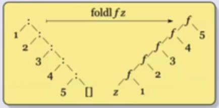

Unidad 1 - Paradigma funcional

La materia se llama "Paradigmas de Programación. Qué es un paradigma de programación:
- paradigma: es una forma de pensamiento (a.k.a un marco teórico, un conjunto de creencias).
- lenguaje de programación: el lenguaje que usamos para comunicar
instrucciones a una computadora.
- describen cómputos (más de a qué me refiero con esto adelante)
- es turing completo si puede expresar todas las funciones computables (LyC war flashbacks). Los DSLs son ejemplos de lenguajes de programación que no necesariamente son turing completos.
- tiene que poder describir lo que hay que hacer de forma explícita y no ambigua.
- Entonces un paradigma de lenguaje de programación lo vamos a entender
como un estilo de programación, que impacta en la forma en la que se encaran
las soluciones
- Está muuuuuy vinculado al modelo de cómputo
- A partir de un estado inicial llegar a un estado final.
- En orga, por ejemplo parto de un estado inicial y aplico secuencias de instrucciones para modificar el estado
- Está muuuuuy vinculado al modelo de cómputo
Entender de paradigmas de programación es una herramienta muy útil a la hora de decidir qué lenguaje elijo para resulver un problema.
En este resumen (y porque es lo visto en clase) voy a hablar de los paradigmas:
- imperativo
- funcional (vamos a usar haskell)
- orientado a objetos (javascript)
- lógico (vamos a usar prolog)
Pero sepan que exiten más: concurrente, eventos, basado en continuaciones, probabilístico, cuántico. Además, hoy en día los lenguajes más modernos suelen tomar features de distintos paradigmas (por ejemplo: rust . Otro ejemplo es la incorporación de funciones anónimas en los distintos lenguajes, que antes estaba medio reservado a los lenguajes funcionales) entonces la linea entre un paradigma y otro dentro de un lenguaje se vuelve más difusa.
Programación Funcional
Si bien vamos a ver todo con lenguaje "haskelloso", la mayoría de conceptos aplican a los lenguajes funcionales en general. Vamos a ver más formal el modelo de cómputo de lenguajes funcionales cuando veamos cálculo lambda.
-
Programar: Definir funciones
-
Ejecutar: Evaluar expresiones
# Programando factorial(1) = 1 factorial(n) = factorial(n - 1) * n # Evaluando factorial(4) => factorial(3) * 4 => factorial(2) * 3 * 4 => factorial(1) * 2 * 3 * 4 => 1 * 2 * 3 * 4 => 6 * 4 => 24 -
Un programa es un conjunto de ecuaciones
-
Expresiones
- Si se puede definir, toda expresión denota un valor
- El valor depende únicamente del valor de sus subexpresiones
- Evaluar/Reducir una expresión es obtener su valor (en el ejemplo
factorial(4) ~> 24) - No toda expresión denota un valor (si no puedo reducir no tengo un valor)
-
Valores
- Los podemos pensar como expresiones que no se pueden seguir reduciendo
Tipos
En Haskell organizamos los valores en tipos. El tipo tiene operaciones asociadas. En haskell se tienen:
- tipos básicos:
Int,Char,Float,Bool - tipos compuestos:
- Listas:
[Int] - Tuplas:
(Int, Bool) - Funciones:
Int -> Int
- Listas:
- todo expresión bien formada tiene un tipo asociado (esto también, más adelante vamos a ver que si no se le puede otorgar tipo a una expresión entonces no se va a poder reducir) y el tipo depende del tipo de sus subexpresiones.
Funciones
-
Definición con ecuación orientada:
doble :: Int -> Int doble x = x + x -
Definición con guardas:
signo :: Int -> Bool signo n | n >= 0 = True | otherwise = False -
Definiciones locales:
f(x, y) = g x + y where g z = z + 2 -
Expresiones Lambda:
-- con un parámetro \x -> x + 1 -- con muchos parámetros \x -> \y -> x + y -- escritura más simple, separo parámetros con espacios \x y -> x + y
Polimorfismo paramétrico
Dada la siguiente función id, cuál es su tipo?
id x = x
Rta: id :: a -> a, donde a es una variable de tipo (es algo así como un meta-tipo)
Clases de Tipos
Cuál es el tipo de máximo?
maximo x y | x > y = x
maximo _ y = y
Puedo probar de evaluar a máximo:
# La evalúo con enteros y funciona
> maximo 1 2
2
# La evalúo con decimales y también funciona
> maximo 1.2 3.4
3.4
Una clase es una suerte de interface que define un conjunto de operaciones. Por ejemplo:
Eq:(==),(/=)Ord:(<),(<=),(>=),(>),max,min,compare
pVolviendo a maximo, tenemos que maximo :: Ord a => a -> a -> a. O sea que
en máximo puedo recibir cualquier tipo en tanto pertenezca a la clase Ord
(cosa de tener el comparador)
Instancia de una clase de tipos
Notar que haskell permite usar el deriving que deriva automáticamente una
"implementación por default" de todas las funciones de Eq. En el caso de Eq
compara cada caso, si es Circulo compara el valor, y si es Rectangulo
compara ambos valores.
data Figura = Circulo Float | Rectangulo Float Float
deriving Eq
Pero también se pueden definir instancias con la lógica que quiera:
instance Ord Figura where
(<=) = \x -> \y -> area x <= area y
Alto Orden
En haskell, las funciones son lo que se conoce como first-class citizens, eso significa que las funciones son un valor más. O sea que podés pasarlas como parámetro, pueden ser el resultado de una función.
Por ejemplo, a id le puedo pasar id. Entonces, cuál sería el tipo de id id?
El tipo es (id id) :: a -> a
Currificación
Veámoslo con 2 ejemplos:
suma :: ??
suma x y = x + y
suma' :: ??
suma' (x, y) = x + y
Si reviso los tipos obtengo que:
suma :: Int -> Int -> Int
suma' :: (Int, Int) -> Int
Cuál es la diferencia? Que la primera implementación puedo hacer por ejemplo
suma 5 y obtengo una función que incrementa en 5. Eso no lo puedo hacer con
suma'. Esta feature de poder evaluar parcialmente las funciones es lo que se
conoce como currificación.

(No, ese Curry no...)
Veamos cómo se ve esto en ghci:
> :type suma
suma :: Int -> Int -> Int
> :type suma 4
(suma 4) :: Int -> Int
O sea que puedo definir por ejemplo inc = suma 1
Viendo curry/uncurry como una función
curry :: ((a, b) -> c) -> (a -> (b -> c))
curry f = \x -> \y -> f (x,y)
-- versión alternativa --
curry f x = \y -> f (x, y)
uncurry :: (a -> b -> c) -> ((a, b) -> c)
uncurry f (a, b) = f x y
Tipos Algebráicos
Puedo definir los tipos por enumeración definiendo:
- el nombre del tipo
- los constructores
data Dia = Lunes | Martes | Miercoles | Jueves | Viernes | Sabado | Domingo
data Bool = True | False
Los constructores también pueden tener parámetros. En la definición tengo que aclarar los tipos de sus argumentos:
data Figura = Circulo Float | Rectangulo Float Float
Algunos ejemplos de tipos:
Lunes :: DiaCirculo 1.0 :: FiguraCirculo :: Float -> Figura
Pattern matching
Es un mecanismo para comparar un valor con un patrón y deconstruir un valor en sus partes. Por ejemplo:
area :: Figura -> Float
area (Circulo radio) = PI * radio^2
area (Rectangulo base altura) = base * altura
Si no hay un match directo, lo que va a hacer haskell es seguir reduciendo. Eventualmente va a matchear o no se va a poder reducir la expresión (y vamos a tener un error).
-
Lineal quiere decir que una variable debe aparecer una única vez a la izquierda.
esCuadrado :: Figura -> Bool esCuadrado (Circulo _) = False esCuadrado (Rectangulo x y) | x == y => = True | otherwise = False -- alternativa esCuadrado (Rectangulo x y) | x == y => = True esCuadrado _ = False -- alternativa también valida esCuadrado (Rectangulo x y) = x == y esCuadrado _ = False -
esCuadrado (Rectangulo x x)sería más simple pero no está permitido en haskell (ej: en erlang/elixir esto es posible)
Observaciones:
-
_coincide con cualquier forma (ver que en la alternativa agarro tanto el caso deCirculocomo el deRectanguloque no es cuadrado) -
los casos se evalúan en el orden que están escritos
-
Puedo definir funciones parciales:
-- en este caso radio (Rectangulo _ _) va a dar error radio (Circulo radio) = radio
Tipos Recursivos
La definición de un tipo tpuede tener uno o más parámetros de tipo:
data Natural = Zero | Succ Natural
Zero :: Natural
Succ Zero :: Natural
Succ (Succ (Succ Zero)) :: Natural
Listas
Es un tipo algebráico paramétrico y recursivo con 2 constructores:
[] :: [a] -- Constructor de la lista vacía
(:) :: a -> [a] -> [a] -- Append Front
Ejemplos de pattern matching:
esVacia :: [a] -> Bool
esVacia [] = True
esVacia _ = False
longitud :: [a] -> Int
longitud [] = 0
longitud (x:xs) _ = 1 + longitud xs
No terminación y orden de evaluación
Veamos la siguiente función:
inf1 :: [Int]
inf1 = 1 : inf1
Se reduce infinitamente, entonces para qué quiero tener algo así? De qué me sirve? Veamos esta función:
const :: a -> b -> a
const x y = x
Qué pasa si hago const 42 inf1? Da 42. Pero en realidad depende del mecanismo
de reducción que tenga el lenguaje, porque haskell resuelve primero el pattern
matching en lugar de reducir los parámetros. Si no me quedaba reduciendo
infinitamente.
Evaluación Lazy (Orden Normal)
- Tiene que ver con el modelo de cómputo que usa haskell, que es el de la
Reducción- Se reemplaza un redex (expresión reducible) por otra usando las ecuaciones orientadas. Un redex es una sub-expresión que no esté en forma normal.
- El redex tiene que ser una instancia del lado izquiero de alguna de las ecuaciones (si no da error), y se reemplaza por el lado derecho asociando las variables correspondientes.
- El resto de la expresión no cambia
- La evaluación Lazy, consiste en seleccionar las funciones más externas y luego los argumentos (pero sólo si se necesitan)
Ejercicios
Ejercicio 1
Definir dobleL :: [Float] -> Float tal que doble xs es la lista que contiene el doble de cada elemento en xs
doble [] = []
doble x:xs = (x * 2) : (doble xs)
Ejercicio 2
Definir esPar :: [Int] -> [Bool] tal que esParL xs indica si el correspondiente elemento en xs es par o no
esPar [] = []
esPar x:xs = (even x) : (esPar xs)
Ejercicio 3
Definir longL :: [[a]] -> [Int] tal que longL xs es la lista que contiene las longitudes de las listas en xs
longL [] = []
longL x:xs = (length x) : (longL xs)
-
Notar que en los ejercicios el patrón era siempre el mismo con la diferencia de que en el primero hacíamos
* 2, en el segundoeven xy en el tercerolength x -
Podemos generalizar este comportamiento (gracias funciones de alto orden!) en la siguiente función:
map :: (a -> b) -> [a] -> [b] map _ [] = [] map f x:xs = (f x) : (map f xs) -
Podemos redefinir las funciones de antes con
map:-- Ni tengo que agregar el parámetro a la definición! doble = map (\x -> 2 * x) esPar = map even longL = map length
Ejercicio 4
Definir negativos :: [Float] -> [Float] tal que negativos xs contiene los elementos negativos de xs
negativos [] = []
negativos x:xs | x < 0 = x : (negativos xs)
| otherwise = negativos xs
Ejercicio 5
Definir noVacias :: [[a]] -> [[a]] tal que noVacias xs contiene las listas no vacías de xs
noVacias [] = []
noVacias x:xs | length x > 0 = x : (noVacias xs)
| otherwise = noVacias xs
-
Notar que en los ejercicios el patrón era siempre el mismo: el caso base devuelve vacío, y para el otro chequeo una condición booleana para saber si agregar o no.
-
Podemos generalizar este comportamiento (gracias funciones de alto orden again!) en la siguiente función:
filter :: (a -> Bool) -> [a] -> [b] filter _ [] = [] filter f x:xs | (f x) = x : (filter f xs) | otherwise = filter f xs -
Podemos redefinir las funciones de antes con
filter:-- Ni tengo que agregar el parámetro a la definición! negativos = filter (\x -> x < 0) noVacias = filter (\x -> length x > 0)
Transparencia referencial
Una propiedad de haskell (y otros lenguajes funcionales) es la de la transparencia referencial. Esto qué significa? Que el resultado de evaluar una expresión sólo depende de sus subexpresiones. Eso tiene la implicancia de que si yo tengo 2 veces la misma subexpresión ambas van a evaluar al mismo valor.
Un ejemplo para ver qué no tiene transparencia referencial es en un lenguaje imperativo como C puedo hacer:
algunaFuncion(x++, x++);
Estoy llamando a algunaFuncion y los parámetros son ambos x++ pero no van a
tener el mismo valor.
Esquemas de recursión
Esquemas de recursión sobre listas
Recursión estructural
Pensemos un par de funciones sobre listas:
-
sumaL: la suma de todos los valores de una lista de enteros-- alguna def con tipos sumaL [] = 0 sumaL (x:xs) = x + sumaL(xs) -
concat: la concatenación de todos los elementos de una lista de listas-- alguna def con tipos concat [] = [] concat (x:xs) = x ++ concat xs -
reverso: el reverso de una listareverso [] = [] reverso (x:xs) = reverso xs ++ [x]
El approach es siempre el mismo. Asumo que se calcular el resultado para el caso más chico y hago alguna operación para combinar todo, y el resultado puede ser otra cosa distinta, no necesariamente una lista. Sumado a eso tenemos un caso base distinguido.
g :: [a] -> b
-- caso base distinguido
g [] = z
g (x:xs) = f x (g xs)
Generalizando, obtenemos el fold:

-- recibimos una función, un elemento para el caso base y una lista
-- la función recibe un elemnto de la lista, y lo otro de tipo b es el resultado parcial
foldr :: (a -> b -> b) -> b -> [a] -> b
foldr _ z [] = z
foldr f z (x:xs) = f x (foldr f z xs)
Algunos ejemplos con foldr
Podemos repensar las funciones de antes usando foldr:
-- a = b = Int => (+) :: Int -> Int -> Int === a -> b -> b
sumaL = foldr (+) 0
-- a = b = [a'] => (++) :: [a'] -> [a'] -> [a'] === a -> b -> b
concat = foldr (++) []
-- a = a', b = [a'] => (:) :: a' -> [a'] -> [a'] === a -> b -> b
-- flip toma una función de 2 parámetros y les invierte el orden
-- al componerlo con (:[]) lo que hace es al primer parámetro (a')
-- lo mete en la lista vacía. Luego se pasa a flip (++) que va a
-- hacer el ++ usando el primer parámetro como segundo
reverso = foldr ((flip (++)) . (:[])) []
-- alternativa más legible en mi opinión
reverso = foldr (\elem -> \partial -> partial ++ [elem]) []
Y también podemos reimplementar map y filter usando foldr:
map f = foldr (\elem -> \partial -> (f elem):partial) []
-- alternativa: (:) es una función a -> [a] -> [a].
-- La compongo con f (sobre el primer elemento) y gané
-- map f = foldr ((:) . f) []
filter f = foldr (\elem -> \partial -> if f elem then (elem:partial) else partial) []
Podemos implementar (++) usando foldr?
(++) :: [a] -> [a] -> [a]
xs ++ ys = foldr (:) ys xs
Ahora probemos algo más complicado. Definamos sumaLong que calcula la
longitud y la suma en una únca pasada sobre una lista.
sumaLong :: [Int] -> (Int, Int)
-- hago pattern matching contra una tupla
sumaLong = foldr (\elem -> \(recLong, recSum) -> (recLong + elem, recSum + 1)) (0, 0)
Por último, podemos definir dropWhile usando foldr? Ej de uso: dropWhile even [2, 4, 1, 6] = [1, 6]. La definición "clásica" es:
dropWhile :: (a -> Bool) -> [a] -> [a]
dropWhile _ [] = []
dropWhile p (x:xs) = if p x then dropWhile p xs else x:xs
La intuición me dice de que esto no se va a poder, porque ahora no tenemos el final de la recursión cuando se nos acaba la lista, si no que depende de los elementos. Igual intentemos:
dropWhile = foldr (\x rec -> ????????) []
Tengo un problema... Si justo tenía que cortar en x, no tengo forma de
"decirle" al caso recursivo que no tiene que filtrar, y tampoco tengo cómo
recuperar lo que falta de la lista.
Cómo puedo sobreponerme a esto? Bueno, por algo vimos el ejemplo anterior de
SumaLong. Podría hacer que mi función devuelva una tupla, en donde el primer
elemento es el resultado del dropWhile y el segundo es la lista sin filtrar.
dropWhile p = fst (foldr (\x (droppedRec, undroppedRec) ->
if p x then (undroppedRec, x:undroppedRec)
else (x:droppedRec, x:undroppedRec)) ([], []))
-- alternativa
dropWhile p = fst (foldr (\x (droppedRec, undroppedRec) ->
(if p x then undroppedRec else x:droppedRec, x:undroppedRec)) ([], []))
-- alternativa: llamo a lo de arriba sin el fst dropWhileTupla y después dropWhile p xs = fst (dropWhileTupla p xs)
Recursión Primitiva
Tomando este problema que tuvimos con foldr para implementar dropWhile, por
qué no nos definimos otra función que si tenga en cuenta el xs del resto de
la lista?
El esquema de dropWhile sería:
g :: [a] -> b
-- caso base
g [] = z
-- recursión
g (x:xs) = f x xs (g xs)
Y la generalización la llamamos recr:
recr :: b -> (a -> [a] -> b -> b) -> [a] -> b
recr z _ [] = z
recr z f (x:xs) = f x xs (recr z f xs)
Las funciones Primitivas Recursivas son un conjunto de funciones que vemos en Lógica y Computabilidad, y en particular tienen un esquema de recursión muy parecido a este que acabamos de ver. Dicho eso, sabemos que no son todas las funciones computables debido a que por ejemplo no existe una primitiva recursiva que pueda calcular la función de Ackermann.
Sin embargo, es posible con foldr implementar la función de Ackermann. Esto
da cuenta realmente del poder de expresividad de foldr.
Podemos reimplementar dropWhile usando recr?
dropWhile p = recr [] (\x xs rec -> if p x then xs else x:rec)
Mucho más simple!
Podemos escribir foldr usando recr?
foldr f z = recr z (\x xs rec -> f x rec)
Y recr en términos de foldr?
-- Uso el mismo truco de antes, devuelvo la tupla manteniendo en el segundo elemento
recr z f = fst . (foldr (\x (rec, xs) -> (f x xs rec, x:xs)) (z, []))
Una alternativa a foldr :: (a -> b -> b) -> b -> [a] -> b es foldl (notar
que se invierte el orden de los tipos en la función):
foldl :: (b -> a -> b) -> b -> [a] -> b
foldl _ z [] = z
foldl f z (x:xs) = foldl f (f z x) xs
La lista ahora se "recorre" de adelante hacia atrás:

Otro detalle es que ahora el llamado recursivo no es parte de la f. Si
volvemos a revisar foldr vamos a notar que si xs era una lista infinita,
pero f ignora la lista no pasa nada. En cambio acá si tenés problemas porque
se consume la lista entera incluso si f no la usa.
Notar que en foldl el z es el resultado parcial, no el caso base (o más
bien, es el caso base en el primer elemento y después es el resultado parcial
acumulado).
Si queremos ver un ejemplo, tomemos sumaL:
sumaL = foldl (+) 0
Es igual! Pero el orden de evaluación cambia:
foldl (+) 0 [1, 2]
foldl (+) ((+) 0 1) [2]
foldl (+) ((+) ((+) 0 1) 2) []
((+) ((+) 0 1) 2)
((+) 1 2)
3
Otro ejemplo, el reverse!:
reverse = foldl (\acc x -> x:acc) []
-- equivalentemente
reverse = foldl (flip (:)) []
foldl vs foldr
- En listas infinitas? Usá
foldr - Puedo escribir
foldlusandofoldr?
-- galerazo: en lugar de acumular y listo, devuelvo una función
-- que cuando la aplique va a tomar el orden del foldl (asumamos
-- que g es alguna función que toma un elemento)
foldl f z xs = foldr (\x recf -> (\ac -> recf (f ac x))) (g)
Creo que ayuda más a entender si lo vemos con un ejemplo y lo expandimos:
-- supongamos que hacemos foldl f g [x, y]
-- al final de la recursión tenemos:
(\ac -> g (f ac y))
-- cuando se vuelve de la recursión y se aplica el siguiente paso
(\ac' -> (\ac -> g (f ac y)) (f ac' x))
-- Si hacemos el reemplazo en la evaluación:
(\ac' -> g (f (f ac' x) y))
-- ahí se puede ver que si ac' es el caso base z, tendría la evaluación en el orden del foldl
Por último entonces, alcanza con notar que si g = id ya gané. O sea que queda definida como:
foldl f z xs = foldr (\x recf -> (\ac -> recf (f ac x))) id z
- Puedo escribir
foldrusandofoldl? No, pero si para listas finitas
Esquemas de recursión sobre tipos de datos algebráicos
rboles binarios
Recuerdo, yo podía definir un árbol binario como:
data Arbol a = Hoja a | Nodo a (Arbol a) (Arbol a)
Y podría querer por ejemplo aplicar una función a todos los nodos. A qué te
suena eso? Así es, al map. En el caso de árboles tendríamos un map definido
como:
mapA :: (a -> b) -> Arbol a -> Arbol b
mapA f (Hoja x) = Hoja (f x)
mapA f (Nodo a (sai) (sad)) = (Nodo (f a) (mapA f sai) (mapA f sad))
Así como puedo hacer map, puedo hacer fold también:
-- recibo una función para aplicar en el caso base y otra
-- para la combinación. La segunda recibe los resultados del
-- fold para ambas ramas
foldA :: (a -> b) -> (a -> b -> b -> b) -> Arbol a -> b
foldA f g (Hoja x) = f x
foldA f g (Nodo x izq der) = g x (foldA f g izq) (foldA f g der)
Algunas operaciones interesantes
-- no te suena al foldr (:) = id?
-- obs: fold aplicado a los constructores es la identidad
id = foldA Hoja Nodo
sumaA = foldA id (\x izq der -> x + izq + der)
altura = fold (\x -> 1) (\x izq der -> max izq der + 1)
rboles Generales
data AG a = NodoAG a [AG a]
La pregunta es cómo hago fold/map con esto?
mapAG :: (a -> b) -> AG a -> AG b
-- uso tanto map como mapAG!!!
mapAG f (NodoAG a as) = NodoAG (f a) (map (mapAG f) as)
-- No tengo "caso base" porque map _ [] = [].
-- Ya está implícito el caso base
foldAG :: (a -> [b] -> b) -> AG a -> b
-- notar que es igual a antes, pero en lugar de aplicar al nodo
-- izquierdo o derecho lo aplico a todos los nodos de la lista
foldAG f (NodoAG a as) = f a (map (foldAG f) as)
Unidad 2 - Cálculo Lambda
- El Cálculo Lambda es un modelo de cómputo basado en funciones, que es la base para el paradigma funcional.
- Fue introducido por Alonzo Church en el 34', cuando quería responder a la
pregunta de si había un proceso mecánico para demostrar si una fórmula era
teorema o no.
- Alonzo formalizó en el lambda cálculo esta idea de computar cosas.
- Si bien lo introduce en el 34', nosotros vamos a ver el Cálculo Lambda Tipado, también desarrollado por Church pero en el 41'.
- las expresiones tienen tipos
- El lambda cálculo es también computacionalmente completo, a.k.a Turing Completo.
$$ \newcommand{\lcb}{\lambda^b} \newcommand{\ifLC}[3]{if\ {#1}\ then\ {#2}\ else\ {#3}} \newcommand{\lf}[3]{\lambda{#1}:\ {#2}.{#3}} \newcommand{\apply}[2]{{#1}\ {#2}} \newcommand{\hastype}[3]{{#1} \triangleright {#2}: {#3}} \newcommand{\ttrue}[1]{\frac{}{\hastype{#1}{true}{Bool}} (T-True)} \newcommand{\tfalse}[1]{\frac{}{\hastype{#1}{false}{Bool}} (T-False)} \newcommand{\tvar}[3]{\frac{{#2}:{#3} \in {#1}}{\hastype{#1}{#2}{#3}} (T-var)} \newcommand{\tif}[5]{\frac{\hastype{#1}{#2}{Bool}\ \ \hastype{#1}{#3}{#5}\ \ \hastype{#1}{#4}{#5}}{\hastype{#1}{\ifLC{{#2}}{{#3}}{{#4}}}{#5}} (T-If)} \newcommand{\tabs}[5]{\frac{\hastype{{#1},{#2}:{#3}}{#5}{#4}}{\hastype{#1}{\lf{{#2}}{{#3}}{{#5}}}{{#3} \rightarrow {#4}}} (T-abs)} \newcommand{\tapp}[5]{\frac{\hastype{#1}{#2}{#3 \rightarrow #4}\ \ \hastype{#1}{#5}{#3}}{\hastype{#1}{\apply{{#2}}{{#5}}}{#4}} (T-app)} \newcommand{\eiftrue}[2]{\frac{}{\ifLC{true}{#1}{#2} \rightarrow #1} (E-IfTrue)} \newcommand{\eiffalse}[2]{\frac{}{\ifLC{false}{#1}{#2} \rightarrow #2} (E-IfFalse)} \newcommand{\eif}[4]{\frac{#1 \rightarrow #2}{\ifLC{#1}{#3}{#4} \rightarrow \ifLC{#2}{#3}{#4}} (E-If)} \newcommand{\eift}[4]{\frac{\eiftrue{#3}{#4}}{\ifLC{#1}{#3}{#4} \rightarrow \ifLC{#2}{#3}{#4}} (E-If)} \newcommand{\eiff}[4]{\frac{\eiffalse{#3}{#4}}{\ifLC{#1}{#3}{#4} \rightarrow \ifLC{#2}{#3}{#4}} (E-If)} $$
Cálculo Lambda Tipado Booleano \(\lcb\)
Expresiones de tipos
Las expresiones de tipos (o simplemente tipos) de \(\lcb\) son:
$$ \sigma, \tau ::= Bool | \sigma \rightarrow \tau $$
En criollo,
- \(Bool\) es el tipo de los booleanos
- \(\sigma \rightarrow \tau\) es el tipo de las funciones de tipo \(\sigma\) en \(\tau\)
Por ejemplo, uno puede tener una función \(Bool \rightarrow Bool\)
Términos de \(\lambda^b\)
Sea \(\mathcal{X}\) un conjunto infinito enumerable de variables y \(x \in \mathcal{X}\). Los términos de \(\lambda^b\) están definidos por:
$$ \begin{align} M,N,P,Q ::=& \ x \\ &| \ true \\ &| \ false \\ &| \ \ifLC{M}{P}{Q} \\ &| \ \lf{x}{\sigma}{M} \\ &| \ \apply{M}{N} \end{align} $$
Es importante entender que estas reglas sólo definen cómo construir sintácticamente los términos, pero no necesariamente te va a dar cosas que tengan sentido ni que sean útiles. Veamos algunos ejemplos de términos válidos:
- \(\lf{x}{Bool}{x}\)
- \(\lf{x}{Bool}{\ifLC{x}{false}{true}}\)
- \(\lf{f}{Bool \rightarrow Bool \rightarrow Bool}{\lf{x}{Bool}{\apply{f}{x}}}\)
- \((\lf{f}{Bool \rightarrow Bool}{\apply{f}{true}})(\lf{y}{Bool}{y})\)
- \(\apply{true}{(\lf{x}{Bool}{x})}\)
- \(\apply{x}{y}\)
Sistema de tipado
- Es un sistema formal de deducción/derivación que usa axiomas y reglas de inferencia para caracterizar al conjunto de los conjuntos "bien tipados"
- Lo definimos a partir de reglas de inferencia
- axiomas de tipado para algunos términos
- reglas de tipado para otros términos, que derivan (siempre y cuando se pueda) el tipado de una expresión en base a sus sub-expresiones.
Variables libres
Ya vimos que tenemos funciones lambda que se pueden usar en la construcción de términos. Antes de seguir con otras cosas está bueno definir y distinguir las variables libres de las variables ligadas. Una variable \(x\) se dice que ocurre libre si no está bajo el alcance de alguna ocurrencia de un \(\lambda x\). En otro caso decimos que ocurre ligada.

Más formalmente:
$$ \begin{align} FV(x) &\stackrel{def}{=} \{ x \} \\ FV(true) = FV(false) &\stackrel{def}{=} \emptyset \\ FV(\ifLC{M}{P}{Q}) &\stackrel{def}{=} FV(M) \cup FV(P) \cup FV(Q) \\ FV(\apply{M}{N}) &\stackrel{def}{=} FV(M) \cup FV(N) \\ FV(\lf{x}{\sigma}{M}) &\stackrel{def}{=} FV(M) \setminus \{x\} \\ \end{align} $$
Sistema de tipado
Un juicio de tipado es una expresión de la forma \(\Gamma \triangleright M\ :\ \sigma\) que se lee como: "el término \(M\) tiene tipo \(\sigma\) asumiendo el contexto de tipado \(\Gamma\)"
Un contexto de tipado por otro lado es un conjunto de pares \(x_i\ :\ \sigma_i\), anotado \(\{x_1\ :\ \sigma_1, \dots, x_n\ :\ \sigma_n\}\) donde los \(\{x_i\}_{i \in 1 \dots n}\) son distintos. Usamos letras \(\Gamma\), \(\bigtriangleup\), ... para contextos de tiapdo.
Axiomas de tipado de \(\lcb\)
Obs: están guiadas por la sintáxis!
$$ \ttrue{\Gamma} $$
$$ \tfalse{\Gamma} $$
$$ \tvar{\Gamma}{x}{\sigma} $$
$$ \tif{\Gamma}{M}{P}{Q}{\sigma} $$
$$ \tabs{\Gamma}{x}{\sigma}{\tau}{M} $$
$$ \tapp{\Gamma}{M}{\sigma}{\tau}{N} $$
- Si \(\hastype{\Gamma}{M}{\sigma}\) puede derivarse usando los axiomas y reglas de tipado decimos que es derivable.
- Decimos que \(M\) es tipable si el juicio de tiapdo \(\hastype{\Gamma}{M}{\sigma}\) puede derivarse, para algún \(\Gamma\) y \(\sigma\).
Resultados básicos (demostración con inducción estructural)
Unicidad de tipos
Si \(\hastype{\Gamma}{M}{\sigma}\) y \(\hastype{\Gamma}{M}{\tau}\) son derivables, entonces \(\sigma = \tau\).
Weakening + Strengthening
Si \(\hastype{\Gamma}{M}{\sigma}\) es derivable y \(\Gamma \cap \Gamma'\) contiene a todas las variables libres de \(M\), entonces \(\hastype{\Gamma'}{M}{\sigma}\).
Semántica (o sea qué hacen mis cómputos)
Hasta ahora definimos para \(\lcb\) con reglas inductivas:
- una sintáxis
- un sistema de tipado
Ahora vamos a darle significado a los términos que para nosotros tengan sentido (o sea aquellos que estén bien tipados).
Hay distintas formas de definir la semántica, en particular vamos a dar una semántica operacional. Nota: hay otros tipos de semántica, como la semántica axiomática (similar a lo que vimos en algo 1 con pre-condición y post-condición, basada en aserciones), denotacional (le das una denotación a cada término del lenguaje y definís la semántica dando funciones para los elementos de la sintaxis).
En qué consiste entonces la semántica operacional:
- interpreto a los términos como estados de una máquina abstracta
- defino reglas para hacer evolucionar (reducir) los términos en otros términos
- también están guiadas por sintaxis
- el significado de un término \(M\) es el estado final que alcanza la máquina si comienza con el estado inicial \(M\)
- hay dos formas de dar la semántica operacional:
- small-step: describo pasos chiquitos. Vamos a ver principalmente este.
- big-step (o natural semantics): la función de transición en un paso reduce al resultado.
- definir la semántica tiene que hacerse de forma precisa cosa de poder llevar todo a una implementación de un intérprete del lenguaje.
Semántica small-step
- La hacemos a través de juicios de evaluación, a.k.a. reglas de reducción que se leen como "el término \(M\) reduce en un paso al término \(N\)":
$$ M \rightarrow N $$
- Uso axiomas de evaluación + reglas de derivación que establecen que algunos juicios de evaluación son derivables a partir de otros juicios que también son derivables.
- Además de la función de transición, tenemos que definir los valores, que son los posibles resultados de una evaluación de términos, en tanto sean cerrados (no tiene variables libres) y estén bien tipados.
Valores
Como nuestro lambda cálculo es booleano, nos interesan true y false. O sea que expresiones complejas también pueden reducir a esos valores. O sea, todo término bien tiapdo y cerrado de tipo \(Bool\) evalúa en cero o más pasos, a \(true\) o \(false\).
$$ V ::= true\ |\ false $$
Juicio de evaluación en un paso
Al If podemos pensarlo como que lo tenemos que reducir por completo el término del \(if\) hasta un valor, sea \(true\) o \(false\)
$$ \eiftrue{M_2}{M_3} $$
$$ \eiffalse{M_2}{M_3} $$
$$ \eif{M_1}{M_1'}{M_2}{M_3} $$
$$ \eiff{(\ifLC{false}{false}{true})}{true}{false}{true} $$
Observaciones:
- No hay \(M\) tal que \(true \rightarrow M\)
- Idem con \(false\)
Algunas propiedades Interesantes
- Lema (Determinismo del juicio de evaluación en un paso): Si las reglas están bien hechas, y \(M \rightarrow M'\) \(M \rightarrow M''\) entonces \(M' = M''\)
- Una forma noraml es un término que no puede evaluarse más (o sea no existe una regla para reducir).
- (recuerdo: un valor es el resultado al que puede evaluar un término bien tipado y cerrado)
- Lema: todo valor está en forma normal. No vale el recíproco en \(\lcb\). Por ejemplo:
- \(\ifLC{x}{true}{false}\), no tengo cómo reducir porque \(x\) ta libre
- \(x\), mismo caso
- \(\apply{true}{false}\), no puedo reducir (tampoco tipa...)
- Lo vemos en un toque, pero el resultado más fuerte es que si una expresión es cerrada y bien tipada eventualmente puedo reducir hasta llegar a un valor.
Evaluación en muchos pasos
El juicio de evaluación en muchos pasos \(\twoheadrightarrow\) es la clausura reflexiva y transitiva de \(\rightarrow\). O sea es la menor relación tal que:
- Si \(M \rightarrow M'\), entonces \(M \twoheadrightarrow M'\)
- \(M \twoheadrightarrow M\) para todo \(M\)
- Si \(M \twoheadrightarrow M'\) y \(M' \twoheadrightarrow M''\), entonces \(M \twoheadrightarrow M''\)
Por ejemplo, tenemos que:
$$ \ifLC{true}{(\ifLC{false}{false}{true})}{true} \twoheadrightarrow true $$
Propiedades
Para el cálculo de expresiones booleanas valen:
- Lema (Unicidad de formas normales): Si \(M \twoheadrightarrow U\) y \(M \twoheadrightarrow V\), con \(U, V\) formas normales, entonces \(U = V\)
- Lema (Terminación): Para todo \(M\) existe una forma normal \(N\) tal que \(M \twoheadrightarrow \).
- esto es bueno porque me aseguro que mi algoritmo de evaluación no tiene loops infinitos
Semántica Operacional de \(\lcb\)
Ya hablamos antes de que en haskell por ejemplo, las funciones también pueden ser resultados de una evaluación (eso de first class citizen, yada yada yada...). Así que por qué no extendemos nuestro conjunto de valores:
$$ V ::= true\ false\ \lf{x}{\sigma}{M} $$
Vamos a extender nuestro sistema tal que valgan los lemas previos, pero además valga el siguiente resultado:
Para todo término bien tipado y cerrado de tipo:
- \(Bool\) evalúa, en cero o más pasos, a \(true, false\).
- \(\sigma \rightarrow \tau\) evalúa, en cero o más pasos, a \(\lf{x}{\sigma}{M}\), para alguna variable \(x\) y algún término \(M\)
- en castellano: si tipa como una función eventualmente lo puedo reducir a la forma de una lambda con una variable y un término
Juicio de evaluación en un paso
- Primero, una regla que me haga reducir lo más que pueda la "función" que quiero evaluar:
$$ \frac{M_1 \rightarrow M_1'}{\apply{M_1}{M_2} \rightarrow \apply{M_1'}{M_2}} (E-App1 / \mu) $$
- Segundo, una regla que me haga reducir lo más que pueda al argumento:
$$ \frac{M_2 \rightarrow M_2'}{\apply{(\lf{x}{\sigma}{M})}{M_2} \rightarrow \apply{(\lf{x}{\sigma}{M})}{M_2'}} (E-App1 / v) $$
- Por último, una regla que se encargue del reemplazo de la evaluación
$$ \frac{}{\apply{(\lf{x}{\sigma}{M})}{V} \rightarrow M \{x \leftarrow V\}} (E-AppAbs / \beta) $$
- Esto último quiere decir agarrar la función lambda, y reemplazar sintácticamente las ocurrencias de \(x\) por \(V\)
- sustituyo únicamente las ocurrencias libres de \(x\)
- le da semántica a la aplicación de funciones
- hay que tener cuidado con los ligadores de variable (los \(\lambda x\))
Podemos dar una definición basada en la sintaxis:
$$ \begin{align} x \{x \leftarrow N\} &\stackrel{def}{=} N \\ a \{x \leftarrow N\} &\stackrel{def}{=} a \text{si a } \notin \{true, false\} \cup \mathcal{X} \setminus \{x\} \\ \ifLC{M}{P}{Q} \{x \leftarrow N\} &\stackrel{def}{=} \ifLC{M\{x \leftarrow N\}}{P\{x \leftarrow N\}}{Q\{x \leftarrow N\}} \\ (\apply{M_1}{M_2}) \{x \leftarrow N\} &\stackrel{def}{=} \apply{M_1\{x \leftarrow N\}}{M_2\{x \leftarrow N\}} \\ \lf{y}{\sigma}{M} \{x \leftarrow N\} &\stackrel{def}{=} ? \\ \end{align} $$
Y ese último? Imaginemos el caso de la sustitución:
$$ \lf{z}{\sigma}{x} \{x \leftarrow N\} \stackrel{def}{=} \lf{z}{\sigma}{z} $$
La convertimos de la función constante en la función identidad! Pero bueno, a priori no importa qué nombre tenga la variable ligada, no? Entonces, lo que podemos hacer es renombrar (o asumir que se hizo el renombre para estas reglas), de manera tal que la variable que se liga en la función lambda no ocurre libre en \(N\). De ser así la regla nos queda:
$$ \lf{y}{\sigma}{M} \{x \leftarrow N\} \stackrel{def}{=} \lf{y}{\sigma}{M\{x \leftarrow N\}}\ \ x \neq y, y \notin FV(N) \\ $$
Para formalizar esto aparece el concepto de \(\alpha\)-equivalencia. Dos términos son \(\alpha\)-equivalentes si únicamente difieren en el nombre de sus variables ligadas. Es una relación de equivalencia.
- \(\lf{x}{Bool}{x} =_{\alpha} \lf{y}{Bool}{y}\)
- \(\lf{x}{Bool}{y} =_{\alpha} \lf{z}{Bool}{y}\)
- acá \(y\) es variable libre en ambos casos
- \(\lf{x}{Bool}{y} \neq_{\alpha} \lf{x}{Bool}{z}\)
- acá tanto \(y\) como \(z\) son variables libres y son distintas en cada término.
- \(\lf{x}{Bool}{\lf{x}{Bool}{x}} \neq_{\alpha} \lf{y}{Bool}{\lf{x}{Bool}{y}}\)
- acá la lambda interna tiene en su subtérmino a la \(x\) ligada, mientras que del lado derecho no.
Llevado a la práctica, esto quiere decir que mientras hagamos las reducciones, podemos tener que hacer el reemplazo por un término \(\alpha\)-equivalente y después aplicar la sustitución.
Estado de error
- Es un estado (término) que no es un valor, pero en el que la evaluación está trabada.
- Representa un estado en el cual el sistema de runtime en una implementación real generaría una excepción
- Ejemplos:
- \(\ifLC{x}{M}{N}\)
- obs: no es cerrado
- \(\apply{true}{M}\)
- obs: no es tipable
- \(\ifLC{x}{M}{N}\)
Objetivo de un sistema de tipos
Queremos garantizar la ausencia de estados de error. Decimos que un término termina o que es fuertemente normalizante si no hay cadenas de reducción infinitas a partir de él.
- Todo término bien tipado termina
- Si un término cerrado está bien tipado, entonces evalúa a un valor
Tenemos algunas propiedades que nos garantizan este teorema:
- Progreso: Si \(M\) es cerrado y bien tipado, entonces:
- \(M\) es un valor
- o bien existe \(M'\) tal que \(M \rightarrow M'\) (o sea no se traba si los términos son cerrados y bien tipados, y no son valores)
- Preservación (de tipo): Si \(\hastype{\Gamma}{M}{\sigma}\) y \(M \rightarrow N\), entonces \(\hastype{\Gamma}{N}{\sigma}\) (o sea que la reducción/evaluación preserva tipos).
Observación: parto de progreso. O bien es un valor, o tengo el término al que reducir. Luego por preservación de tipos, aplicar la reducción nos dice que el nuevo término está bien tipado, y sigue siendo cerrado.
$$ \newcommand{\lcb}{\lambda^b} \newcommand{\lce}{\lambda^{bn}} \newcommand{\lcr}{\lambda^{\dots n}} \newcommand{\lcu}{\lambda^{bnu}} \newcommand{\lclet}{\lambda^{\dots let}} \newcommand{\ifLC}[3]{if\ {#1}\ then\ {#2}\ else\ {#3}} \newcommand{\lf}[3]{\lambda{#1}:\ {#2}.{#3}} \newcommand{\apply}[2]{{#1}\ {#2}} \newcommand{\hastype}[3]{{#1} \triangleright {#2}: {#3}} \newcommand{\tzero}[1]{\frac{}{\hastype{\Gamma}{0}{Nat}} (T-Zero)} \newcommand{\tsucc}[2]{\frac{\hastype{#1}{#2}{Nat}}{\hastype{\Gamma}{succ(M)}{Nat}} (T-Succ)} \newcommand{\tpred}[2]{\frac{\hastype{#1}{#2}{Nat}}{\hastype{\Gamma}{pred(M)}{Nat}} (T-Pred)} \newcommand{\tiszero}[2]{\frac{\hastype{#1}{#2}{Nat}}{\hastype{\Gamma}{iszero(M)}{Bool}} (T-IsZero)} \newcommand{\esucc}[2]{\frac{#1 \rightarrow #2}{succ(#1) \rightarrow succ(#2)} (E-Succ)} \newcommand{\epredzero}{\frac{}{pred(0) \rightarrow 0} (E-PredZero)} \newcommand{\epredsucc}[1]{\frac{}{pred(#1 + 1) \rightarrow #1} (E-PredSucc)} \newcommand{\epred}[2]{\frac{#1 \rightarrow #2}{pred(#1) \rightarrow pred(#2)} (E-Pred)} \newcommand{\eiszerozero}{\frac{}{iszero(0) \rightarrow true} (E-IsZeroZero)} \newcommand{\eiszerosucc}{\frac{}{iszero(n + 1) \rightarrow false} (E-IsZeroSucc)} \newcommand{\eiszero}[2]{\frac{#1 \rightarrow #2}{iszero(#1) \rightarrow iszero(#2)} (E-IsZero)} $$
Cálculo Lambda Tipado Extendido \(\lce\)
Idea: extendamos \(lcb\) para agregar los números naturales y así darle mayor utilidad.
Nota: esta idea de extender el lenguaje es interesante más allá de lo teórico, en la práctica si uno quiere agregar un feature a un lenguaje tiene que considerar qué pasos son necesarios para extenderlo.
Tipos y Términos de \(\lce\)
Los tipos son:
$$ \sigma ::= Bool\ Nat\ \sigma \rightarrow \rho $$
Y los términos son:
$$ M ::= \dots | 0 | succ(M) | pred(M) | iszero(M) $$
donde tengo los términos del \(lcb\) usual más los aquí definidos:
- \(succ(M)\): evaluar \(M\) hasta que de un número e incrementarlo.
- \(pred(M)\): evaluar \(M\) hasta que de un número y decrementarlo.
- \(iszero(M)\): evaluar \(M\) hasta que de un número y luego devolver \(true / false\) según sea cero o no.
Reglas de tipado de \(lce\)
Junto con las reglas y axiomas previamente definidas para \(lcb\), se le suman:
$$ \tzero{\Gamma} $$
$$ \tsucc{\Gamma}{M} $$
$$ \tpred{\Gamma}{M} $$
$$ \tiszero{\Gamma}{M} $$
Valores \(\lce\)
Valores:
$$ V ::= \dots |\ n\ \text{ donde n abrevia } succ^n(0) $$
Esto ya nos da una idea de que si tengo un \(succ(M)\) voy a querer reducir lo de adentro tanto como pueda
Juicio de evaluación en un paso
Ahora le damos la semántica. Igual que para el tipado, usamos las mismas reglas que antes sumando:
- Para succ y pred:
$$ \esucc{M_1}{M_1'} $$
$$ \epredzero $$
$$ \epredsucc{n} $$
$$ \epred{M_1}{M_1'} $$
- Para iszero:
$$ \eiszerozero $$
$$ \eiszerosucc $$
$$ \eiszero{M_1}{M_1'} $$
Algunas observaciones:
- Tanto \(E-Succ\) y \(E-Pred\) intentan reducir el argumento hasta llevarlo a un valor
- pred además reduce cuando tiene adentro un succ (a pesar de estar en forma normal)
- iszero reduce hasta tener un valor y después hace el chequeo
Cálculo Lambda Tipado Extendido \(\lcr\)
Tipos
Podemos pensar a los registros como un struct de C ponele. Incluso más simple, es un conjunto de tuplas ordenado (nombre, valor).
Para suponemos que tenemos \(\mathcal{L}\) un conjunto de etiquetas y sumamos el nuevo tipo:
$$ \sigma ::= \dots |\ \{l_i : \sigma_i^{i \in 1 \dots n}\} $$
Observación: los registros pueden tener subregistros adentro. Por ejemplo:
Términos
$$ M ::= \dots |\ \{l_i = M_i^{i \in 1 \dots n}\} |\ M.I $$
Informalmente hablando:
- El registro \(\{l_i = M_i^{i \in 1 \dots n}\}\) evalúa a \(\{l_i = V_i^{i \in 1 \dots n}\}\), donde \(V_i\) es el valor al que evalúa \(M_i\), \(i \in 1 \dots n\).
- \(M.I\), la proyección, consiste en evaluar \(M\) hasta obtener \(\{l_i = V_i^{i \in 1 \dots n}\}\) y luego proyectar al campo correspondiente.
Algunos ejemplos:

- Dado un \(x\) de tipo \(Nat\) y un \(y\) de tipo \(Bool\), genera un registro donde pongo en \(edad\) a \(x\) y en \(esMujer\) a \(y\).
- Dado un registro que tiene 2 campos, aplica la proyección del campo \(edad\)
- Este último es igual al anterior pero se evalúa en lugar de obtener una función y listo
Reglas de tipado
$$ \frac{\Gamma \triangleright M_i : \sigma_i\ \text{para cada } i \in 1 \dots n}{\Gamma \triangleright \{l_i = M_i^{i \in 1 \dots n} \} : \{l_i : \sigma_i^{i \in 1 \dots n}\}} (T-RCD) $$
$$ \frac{\Gamma \triangleright M_i : \{l_i : \sigma_i^{i \in 1 \dots n}\}\ j \in 1 \dots n}{\Gamma \triangleright M.I_j : \sigma_j} (T-Proj) $$
Semántica operacional de \(lcr\)
Valores
Agrego los registros como posibles valores (en tanto todos sus elementos sean valores también):
$$ V ::= \dots |\ \{l_i = V_i^{i \in 1 \dots n}\} $$
Reglas de reducción
La primer regla nos da la idea de que sí o si tengo que reducir en el orden de las etiquetas:
$$ \frac{M_j \rightarrow M_j'}{\{l_i = V_i^{i \in 1 \dots j-1}, l_j = M_j, l_i = M_i^{i \in j+1 \dots n}\} \rightarrow \{l_i = V_i^{i \in 1 \dots j-1}, l_j = M_j', l_i = M_i^{i \in j+1 \dots n}\}} (E-RCD) $$
Luego tenemos las reglas para la proyección:
$$ \frac{j \in 1 \dots n}{\{l_i = V_i^{i \in 1 \dots n}\}.l_j \rightarrow V_j} (E-ProjRCD) $$
$$ \frac{M \rightarrow M'}{M.I \rightarrow M'.I} (E-ProjRCD) $$
O sea que primero reduzco antes de proyectar, y reduzco en el orden de las etiquetas. Una vez que llegué a una expresión de registro en forma normal, recién ahí hago el reemplazo por el valor correspondiente a la etiqueta.
Cálculo Lambda Tipado Extendido \(\lcu\)
Vamos a agregar un nuevo tipo, que se va a comportar similar a lo que es el void en C o C++. A este tipo lo vamos a llamar \(Unit\). No nos importa mucho qué retorna.
Tipos y términos de \(\lcu\)
$$ \sigma ::= Bool\ |\ Nat\ |\ \textbf{Unit}\ |\ \sigma \rightarrow \rho $$
$$ M ::= \dots\ |\ unit $$
Reglas de tipado
Se agrega un axioma de tipado:
$$ \frac{}{\hastype{\Gamma}{unit}{Unit}} $$
Observaciones:
- no se agregan reglas de evaluación nuevas
- Se extiende el conjunto de valores \(V\) con \(unit\): $$ V ::= \dots\ |\ unit $$
Utilidad de Unit
- El principal uso es en lenguajes que tienen side effects.
- En dichos lenguajes es útil poder evaluar varias expresiones secuencialmente. Entonces definimos:
$$ M_1;M_2 \stackrel{def}{=} \apply{(\lf{x}{Unit}{M_2})}{M_1}\ \ \ x \notin FV(M_2) $$
- La evaluación de \(M_1;M_2\) consiste en nprimero evaluar \(M_1\) y luego \(M_2\).
- Bajo esta definición, el comportamiento se da con las reglas de evaluación ya existentes.
Obs: por ahora nuestro lenguaje no tiene side effects, ya vamos a llegar a eso.
Cálculo Lambda Tipado Extendido \(\lclet\)
En este caso, vamos a agregar una feature que no introduce tipos, y tampoco
introduce mecanismos de ejecución necesariamente pero si aporta legibilidad. Es
el equivalente en cálculo lambda del f = ... where ... de haskell.
Términos
$$ M ::= \dots\ |\ let\ x : \sigma = M\ in\ N $$
La idea es evaluar \(M\) hasta un valor \(V\), ligamos \(x\) a \(V\) y evaluamos \(N\). Algunos ejemplos:
let x: Nat = 2 in succ(x)pred (let x: Nat = 2 in x)let f: Nat -> Nat = \x: Nat.succ(n) in f(f(0))let x: Nat = 2 in let x: Nat = 3 in x
Tipado
Si bien no agregamos tipos, si tenemos una regla de tipado:
$$ \frac{\hastype{\Gamma}{M}{\sigma_1}\ \ \ \hastype{\Gamma,\ x:\sigma_1}{N}{\sigma_2}}{\hastype{\Gamma}{let\ x: \sigma_1 = M\ in\ N}{\sigma_2}} (T-Let) $$
Obs: la regla tiene un aire a \(T-Abs\)
Semántica operacional de \(\lclet\)
Tenemos 2 reglas, una para reducir y otra cuando llego a un valor:
$$ \frac{M_1 \rightarrow M_1'}{let\ x: \sigma = M_1\ in\ M_2 \rightarrow let\ x: \sigma = M_1'\ in\ M_2} (E-Let) $$
$$ \frac{}{let\ x: \sigma = V_1\ in\ M_2 \rightarrow \apply{M_2}{\{x \leftarrow V_1\}}} (E-LetV) $$
Interpretando el let
En una expresión como let x: Nat = 2 in M:
- x se declara con el valor 2
- x es inalterado a lo largo de la evaluación de M
- en este sentido x es inmutable. No hay operación de asignación
Lo siguiente es agregar variables mutables (casi que estamos saliendo del terreno del lenguaje funcional y metiéndonos en el terreno del lenguaje mutable)
Cálculo Lambda con variables mutables
Vamos a agregar algunas operaciones básicas:
- Reserva de memoria (allocation): \(ref M\) genera una referencia fresca cuyo contenido es el valor de \(M\).
- Desreferenciación (lectura): \(!x\) sigue la referencia \(x\) y retorna su contenido.
- Asignación: \(x := M\) almacena en la referencia \(x\) el valor de \(M\).
(Nota: se omiten los tipos de las expreciones para facilitar la lectura, perdemos algo de formalismo. Sepan comprender)
let x = ref 2 in !xevalúa a 2let x = ref 2 in (\_: Unit.!x) (x := succ(!x))evalúa a 3 (es lo mismo que hacerx := succ(!x); !x)let x = 2 in xevalúa a 2let x = ref 2 in xa qué evalúa? A priori no sabemos (todavía no vimos qué devuelve unref 2)let x = ref 2 in let y = x in (\_: Unit.!x) (y := succ(!y))evalúa a 3. Primero reemplaza el y por la referencia, y después es igual al segundo ejemplo. Obtuve en este caso un alias a la celda de memoria.
Obs: x sigue siendo inmutable pero en los primeros 2 casos lo que es inmutable es la referencia a la memoria, no su contenido.
Comandos
Pregunta: el término let x = ref 2 in x := succ(!x), a qué evalúa? En la operación de asignación sólo interesa el efecto que tiene, por lo tanto la definimos como que evalúa a \(unit\). Esto es lo que conocemos como comando
Formalizando
Expresiones de tipos
\(Ref \sigma\) va a ser el tipo de las referencias a valores de tipo \(\sigma\). O sea \(Ref (Bool \rightarrow Nat)\) es el tipo de las referencias a funciones de \(Bool\) en \(Nat\).
$$ \sigma ::= Bool\ |\ Nat\ |\ \sigma \rightarrow \tau\ |\ Unit\ |\ Ref \sigma $$
Términos
$$ M ::= \dots\ |\ ref\ M\ |\ !M\ |\ M := N\ |\ l $$
Nota: por ahora ignorar el último término pero es el que corresponde a las referencias propiamente dichas (idealemente no se exponen al "programador" pero en la maquinaria lógica hay que tenerlas en consideración)
Reglas de tipado
El tipo de la referencia es una referencia al tipo del término:
$$ \frac{\hastype{\Gamma}{M_1}{\sigma}}{\hastype{\Gamma}{ref\ M_1}{Ref\ \sigma}} (T-Ref) $$
El tipo de la desreferencia es el tipo interno de la referencia:
$$ \frac{\hastype{\Gamma}{M_1}{Ref\ \sigma}}{\hastype{\Gamma}{!M_1}{\sigma}} (T-DeRef) $$
Por último, el tipo de una asignación es siempre unit y además el tipo de la variabla tiene que ser una referencia del tipo que se está asignando:
$$ \frac{\hastype{\Gamma}{M_1}{Ref\ \sigma_1}\ \ \hastype{\Gamma}{M_2}{\sigma_1}}{\hastype{\Gamma}{M_1 := M_2}{Unit}} (T-Assign) $$
Semántica
Al intentar formalizar la semántica operacional surgen 2 preguntas:
- Cuáles son los valores de tipo \(Ref \sigma\)
- Cómo modelo la evaluación del término \(ref M\)
Para poder responder esto tenemos que responder antes a la pregunta: qué es una referencia (rta: es una abstracción de una porción de memoria que se encuentra en uso).
Entonces, vamos a tener que modelar la memoria!
- Usamos direcciones simbólicas o "locations" \(l, l_i \in \mathcal{L}\) para representar referencias.
- La memoria o store va a ser una función parcial de direcciones a valores (a.k.a un diccionario).
- Usamos \(\mu, \mu'\) para referirnos a stores
- Notación:
- \(\mu[l \rightarrow V]\) es el store resultante de pisar \(\mu(l)\) con \(V\).
- \(\mu \oplus (l \rightarrow V)\) es el store extendido resultante de ampliar \(\mu\) con una nueva asociación \(l \rightarrow V\) (asumiendo \(l \notin Dom(\mu)\), porque si no hubiese usado la sintáxis de arriba).
- Cambia también ligeramente la sintaxis de los juicios de valor:
$$ M\ |\ \mu \rightarrow M'\ |\ \mu' $$
Agregar las location nos obliga a agregar nuevas reglas de tipado. En particular, cuál sería el tipo de \(\hastype{\Gamma}{l}{?}\)?
- Depende de qué valores se almacenen en \(l\)
- Tengo un problema similar al de las variables libres
- Tenemos que introducir entonces un contexto de tipado para direcciones \(\Sigma\)
Nuevo formato de los juicios de tipado:
$$ \hastype{\Gamma | \Sigma}{M}{\sigma} $$
Y Nueva regla de tipado:
$$ \frac{\Sigma(l) = \sigma}{\hastype{\Gamma | \Sigma}{l}{Ref \sigma}} (T-Loc) $$
Valores
Además de los ya existentes, incluimos las direcciones al conjunto de valores:
$$ V ::= \dots\ |\ unit\ |\ \lf{x}{\sigma}{M}\ |\ l $$
Operaciones de reducción en un paso
Reglas para ref:
$$ \frac{M_1\ |\ \mu \rightarrow M_1'\ |\ \mu' \rightarrow}{(ref\ M_1 | \mu) \rightarrow ref\ M_1' | \mu} (E-RefV) $$
$$ \frac{l \notin Dom(\mu)}{(ref V\ | \mu) \rightarrow (l | \mu \oplus (l \rightarrow V))} (E-RefV) $$
Reglas para la desreferenciación:
$$ \frac{M_1 | \mu \rightarrow M_1' | \mu'}{!M_1 | \mu \rightarrow !M_1' | \mu} (E-Deref) $$
$$ \frac{\mu(l) = V}{!l | \mu \rightarrow V | u} (E-DerefLoc) $$
Las reglas para la asignación:
Dejo evolucionar el lado de la etiqueta:
$$ \frac{M_1\ |\ \mu \rightarrow M_1'\ |\ \mu'}{M_1 := M_2\ |\ \mu \rightarrow M_1' := M_2\ |\ \mu' } (E-Assign1) $$
Cuando llegué al valor evalúo lo que se asigna:
$$ \frac{M_2\ |\ \mu \rightarrow M_2'\ |\ \mu'}{V := M_2\ |\ \mu \rightarrow V := M_2'\ |\ \mu' } (E-Assign2) $$
Por último, la evaluación se reduce a \(unit\), pero la memoria se modifica:
$$ \frac{}{l := V\ |\ \mu \rightarrow unit\ |\ \mu[l \rightarrow V] } (E-Assign) $$
Revisitando reglas de evaluación viejas
Como ahora tenemos el store, tenemos que actualizar todas las reglas previas. Veamos un par de ejemplos de la aplicación pero en general la regla es la misma y lo único que hay que reflejar es si el store puede cambiar o no.
$$ \frac{M_1\ |\ \mu \rightarrow M_1'\ |\ \mu'}{\apply{M_1}{M_2}\ |\ \mu \rightarrow \apply{M_1'}{M_2}\ |\ \mu'} (E-App1) $$
$$ \frac{M_2\ |\ \mu \rightarrow M_2'\ |\ \mu'}{\apply{V_1}{M_2}\ |\ \mu \rightarrow \apply{V_1}{M_2'}\ |\ \mu'} (E-App2) $$
Notar que para cuando hacemos la aplicación, al ser un reemplazo sintáctico el store no cambia:
$$ \frac{}{\apply{(\lf{x}{\sigma}{M})}{V}\ |\ \mu \rightarrow M \{x \leftarrow V\}\ |\ \mu} (E-AppAbs) $$
The last crusade: Corrección de sistema de tipos
Como vimos para \(\lcb\), podíamos asegurar dos características que eran:
- progreso: si \(M\) es cerrado y bien tipado entonces o bien es un valor o se puede reducir a un término \(M'\)
- preservación: si \(M\) es de tipo \(\sigma\) bajo el contexto \(\Gamma\), y se reduce a otro término \(N\), entonces ese nuevo término también va a ser de tipo \(\sigma\). O sea que la reducción preserva tipos.
Tenemos que poder reformular estas propiedades en el marco del lambda cálculo tipado con referencias (y registros y otras cosas, aunque lo relevante son las referencias).
Qué pasa con la siguiente formulación?
Si \(\hastype{\Gamma | \Sigma}{M}{\sigma}\) y \(M\ |\ \mu \rightarrow M'\ |\ \mu'\) entonces \(\hastype{\Gamma | \Sigma}{M'}{\sigma}\)
El problema que tenemos con esto es que la semántica puede no respetar los tipos asumidos para las direcciones (o sea \(\sigma\))
Por ejemplo, supongamos que:
- \(M = !l \)
- \(\Gamma = \emptyset \)
- \(\Sigma(l) = Nat \)
- \(\mu(l) = true \)
Esto ya de por si es raro porque significaría que nuestro tipo dice que tenemos un \(Nat\) pero guardamos un valor booleano. Pero bueno, no está restringido en lo que enunciamos.
Observar que:
- \(\hastype{\Gamma | \Sigma}{M}{Nat} \) y
- \(M\ |\ \mu \rightarrow true\ |\ \mu \)
- pero \(\hastype{\Gamma | \Sigma}{true}{Nat}\) no vale
Lo importante es la coordinación entre el contexto de tipado \(\Sigma\) y el valor en el store durante la evaluación \(\mu\)
Reformulando preservación
Tenemos que hablar de compatibilidad / coordinación entre el store y el contexto de tipado para stores (se podría pensar que "tipamos" los stores).
Para eso intrducimos un nuevo "juicio de tiapdo" para el store:
$$ \Gamma | \Sigma \triangleright \mu \iff $$
- \(Dom(\Sigma) = Dom(\mu)\)
- \(\hastype{\Gamma | \Sigma}{\mu(l)}{\Sigma(l)} \text{ para todo } l \in Dom(\mu)\)
Con esto definido, podemos reformular la propiedad de preservación:
Si \(\hastype{\Gamma | \Sigma}{M}{\sigma}\) y \(M\ |\ \mu \rightarrow N\ |\ \mu'\) y \(\Gamma | \Sigma \triangleright \mu\) entonces \(\hastype{\Gamma | \Sigma}{N}{\sigma}\)
Pero de vuelta, tenemos que considerar una cosa más. En el paso de evaluación, pudo haber cambiado el store. Entonces necesitamos también incluir dicha consideración.
Si
- \(\hastype{\Gamma | \Sigma}{M}{\sigma}\)
- \(M\ |\ \mu \rightarrow N\ |\ \mu'\)
- \(\Gamma | \Sigma \triangleright \mu\)
entonces existe un \(\Sigma' \subseteq \Sigma\) tal que:
- \(\hastype{\Gamma | \Sigma'}{N}{\sigma}\)
- \(\Gamma\ |\ \Sigma' \triangleright \mu'\)
Reformulando progreso
Si \(M\) es cerrado y bien tipado (es decir, \(\hastype{\emptyset | \Sigma}{M}{\sigma}\)) para algún \Sigma,\sigma) entonces:
- \(M\) es un valor (o sea el store quedó fijo)
- o bien para cualquier store \(\mu\) tal que \(\emptyset | \Sigma \rightarrow \mu\), existe \(M'\) y \(\mu'\) tal que \(M\ |\ \mu \rightarrow M'\ |\ \mu'\) (o sea que puedo haber cambiado el store)
Ejemplos


En ese último ejemplo me quedo en un loop infinito de evaluaciones. En \(\lambda^{bnr}\) (lambda cálculo con booleanos, naturales y referencias) no todo término cerrado y bien tipado termina.
Recursión
Algo común en funcional es tener definiciones de funciones recursivas. Intentemos extender el \(\lambda\)-cálculo para soportarlo. Para eso tenemos que introducir un nuevo término:
$$ M ::= \dots\ |\ fix\ M $$
Y si bien no se precisan nuevos tipos, si se necesita una regla de tipado nueva:
$$ \frac{\hastype{\Gamma}{M}{\sigma_1 \rightarrow \sigma_1}}{\hastype{\Gamma}{fix\ M}{\sigma_1}} (T-Fix) $$
Obs: sólo le puedo pasar funciones cuyo dominio y codominio coincidan, y \(fix M\) tiene el mismo tipo que el codominio.
Semántica operacional
No hay valores nuevos pero se suman 2 reglas de evaluación.
Nota: si bien es posible, acá dejamos de considerar la parte de cálculo lambda con efectos y referencias
Primero reduzco todo lo que pueda lo de adentro del fix
$$ \frac{M_1 \rightarrow M_1'}{fix\ M_1 \rightarrow fix\ M_1'} (E-Fix) $$
Luego hago el reemplazo como cuando hacía la evaluación de una lambda. Pero ojo, lo reemplazo por el fix entero.
$$ \frac{}{fix\ \lf{x}{\sigma}{M} \rightarrow M \{x \leftarrow fix\ \lf{x}{\sigma}{M}\}} (E-FixBeta) $$
Mecanismo de escape
Dada la semántica operacional de \(fix\), se va a evaluar tanto como sea necesario. Pero a priori puede seguir de forma infinita. Entonces necesitamos alguna herramienta que nos de control respecto a cuándo cortar. Una posibilidad es usar un if-else-then. Veamos un ejemplo de eso:
Sea M el término:
\f: Nat -> Nat.
\x: Nat. if iszero(x) then 1 else x * f(pred(x))
en
let fact = fix M in fact 3
Veamos cómo se reduce:
let fact = fix M in fact 3
let fact = \x: Nat. if iszero(x) then 1 else x * (fix M)(pred(x)) in fact 3
\x: Nat. if iszero(x) then 1 else x * (fix M)(pred(x)) 3
if iszero(3) then 1 else 3 * (fix M)(pred(3))
3 * (\x: Nat. if iszero(x) then 1 else x * (fix M)(pred(x)))(pred(3))
3 * (\x: Nat. if iszero(x) then 1 else x * (fix M)(pred(x)))(2)
3 * (if iszero(2) then 1 else 2 * (fix M)(pred(2))))
3 * (2 * (fix M)(pred(2)))
3 * (2 * (\x: Nat. if iszero(x) then 1 else x * (fix M)(pred(x)))(pred(2)))
3 * (2 * (\x: Nat. if iszero(x) then 1 else x * (fix M)(pred(x)))(1))
3 * (2 * iszero(1) then 1 else 1 * (fix M)(pred(1)))
3 * (2 * 1 * (fix M)(pred(1)))
3 * (2 * 1 * (fix M)(0))
3 * (2 * 1 * (\x: Nat. if iszero(x) then 1 else x * (fix M)(pred(x)))(0))
3 * (2 * 1 * if iszero(0) then 1 else 0 * (fix M)(pred(0)))
3 * (2 * 1 * 1)
...
6
Obs: el término M tiene tipo (Nat->Nat) -> (Nat->Nat), con lo cual el fix va
a ser de tipo Nat->Nat. De alguna forma podemos pensar que la f sirve para
llamar a la recursión de la función y la x es el parámetro del llamado actual.
Más ejemplos
- Podemos definir funciones parciales:
fix (\x: Nat.succ x)
-> succ (fix (\x: Nat.succ x))
-> succ (succ (fix (\x: Nat.succ x)))
-> ...
letrec
A modo de sintactic sugar definimos:
letrec f: t -> t = \x : t.M in N
El letrec se puede re-escribir usando let con:
let f = fix (\f : t -> t. \x: t.M) in N
$$ \newcommand{\lft}[2]{\lambda{#1}.{#2}} \newcommand{\lf}[3]{\lambda{#1}:\ {#2}.{#3}} \newcommand{\ifLC}[3]{if\ {#1}\ then\ {#2}\ else\ {#3}} \newcommand{\apply}[2]{{#1}\ {#2}} \newcommand{\hastype}[3]{{#1} \triangleright {#2}: {#3}} \newcommand{\inference}[1]{\mathbb{W}(#1)} $$
Inferencia de tipos
Queremos resolver el problema de recibir términos sin información de tipos o con información de tipos parcial en términos tipables. Para eso es necesario inferir la información de tipos que falta.
En lenguajes tipados esto permite obviar algunas declaraciones de tipos (e.g Haskell, Rust, etc.), esto puede resultar en código más simple de entender (menos complejidad), y no afecta el tiempo de ejecución porque esto se puede hacer en tiempo de compilación.
Punto de partida
Primero vamos a modificar la sintaxis de los términos del \(\lambda\)-cálculo eliminando toda anotación de tipos (el único lugar donde teníamos era en la lambda). O sea la función lambda pasa a ser: \(\lft{x}{M}\). A ese conjunto de términos lo denotamos \(\Lambda\).
Para formalizar esto, vamos a usar la función \(Erase(.):\ \Lambda_{\tau} \rightarrow \Lambda\) que elimina las anotiaciones de tipos. Por ejemplo:
$$ Erase(\lf{x}{Nat}{\lf{f}{Nat\ \rightarrow Nat}{\apply{f}{x}}}) = \lft{x}{\lft{f}{\apply{f}{x}}} $$
Definición formal del problema de la inferencia
Dado \(U\) un término sin anotaciones de tipo, encontrar un término con anotaciones de tipos \(M\) tal que:
- \(\hastype{\Gamma}{M}{\sigma}\) para algún \(\Gamma\) y \(\sigma\), y
- \(Erase(M) = U\)
Ejemplos
- \(U = \lft{x}{succ(x)}\), \(\lf{x}{Nat}{succ(x)}\) (en este caso no hay otra posibilidad)
- \(U = \lft{x}{\lft{f}{\apply{f}{x}}}\) tomamos \(M_{\sigma,\tau} = \lf{x}{\sigma}{\lf{f}{\sigma \rightarrow \tau}{\apply{f}{x}}}\) (notar que en este caso hay un \(M_{\sigma,\tau}\) por cada par \(\sigma,\tau\))
- Si \(U = \apply{x}{x}\), en principio no tenemos un término \(M\) que satisfaga la propiedad.
Es importante poder diferenciar un problema de otro. El problema del chequeo de tipos es que dado un término \(M\) tengo que determinar si existe un contexto \(\Gamma\) y un tipo \(\sigma\) tales que \(\hastype{\Gamma}{M}{\sigma}\) es derivable.
- esto es muuuuuucho más fácil que el problema de inferencia, ya que está todo guiado por sintáxis
- de hecho, la forma para chequear eso es seguir la estructura sintáctica para construir una derivación del juicio de tipado.
- es escencialmente lo mismo a que ya te den el \(\Gamma\) y el \(\sigma\) y veas si \(\hastype{\Gamma}{M}{\sigma}\) es derivable.
Variables de tipo
Supongamos que tenemos \(U = \lft{x}{\lft{f}{\apply{f}{x}}}\). Entonces dijimos que para cada \(\sigma\) tengo definido un \(M_{\sigma} = \lf{x}{\sigma}{\lf{f}{\sigma \rightarrow \sigma}{\apply{f}{x}}}\). Y cada uno de esos es una solución posible al problema de la inferencia.
Entonces, estaría bueno tener una forma de agrupar todas esas soluciones en una sola. Para eso, podríamos representar a todas las soluciones con \(\lf{x}{s}{\lf{f}{s \rightarrow s}{\apply{f}{x}}}\
- \(s\) no es un tipo en si mismo si no que es una variable de tipos.
- la expresión no es una solución en si misma, pero la substitución de \(s\) por cualquier expresióin de tipos si nos da una solución.
Extensión de las expresiones de tipo
$$ \sigma ::= s\ |\ Nat\ |\ Bool\ |\ \sigma \rightarrow \tau $$
- Denotamos con \(\mathcal{V}\) al conjunto de variables de tipo.
- Denotamos con \(\mathcal{T}\) al conjunto de tipos definidos como arriba.
Sustitución de tipos
Vamos a definir una función de sustitución que mapea variables de tipo en expresiones de tipo \(\mathcal{S}: \mathcal{V} \rightarrow \mathcal{T}\). Sólo nos interesan las \(\mathcal{S}\) tales que \(\{t \in \mathcal{V}\ |\ St \neq t\}\) es finito (Es un detalle técnico, lo importante es que no queremos que reemplace infinitas variables)
Además, vamos a querer poder aplicar \(S\) a varias cosas:
- expresiones de tipos (dado \(\sigma\), escribimos \(S\sigma\))
- un término cualquiera (dado \(M\) escribimos \(SM\))
- un contexto de tipado (dado \(\Gamma = \{x_1: \sigma_1, \dots, x_n: \sigma_n\}\) escribimos \(S\Gamma\) definido como:)
$$ S\Gamma = \{x_1: S\sigma_1, \dots, x_n: S\sigma_n\} $$
Algunas consideraciones extra:
- Llamamos soporte de \(S\) a \(\{t\ |\ St \neq t\}\)
- El soporte representa las variables que \(S\) "afecta".
- Usamos la notación \(\{\sigma_1/t_1, \dots, \sigma_n/t_n\}\) para la sustitución con soporte \(\{t_1, \dots, t_n\}\)
- los \(\sigma_i\) es la cosa por la que reemplazo a los Ts
- La sustitución con soporte \(\emptyset\) es la sustitución identidad y la notamos \(Id\)
Juicio de tipado instanciado
Dado un juicio de tipado original \(\hastype{\Gamma}{M}{\sigma}\), hablamos del juicio de tipado instanciado \(\hastype{\Gamma'}{M'}{\sigma'}\) al resultante de aplicarle una sustitución \(S\) al juicio original (en caso de existir tal \(S\). Esto es equivalente a que existe \(S\) tal que:
$$ S\Gamma \subseteq \Gamma', M' = SM, \sigma' = S\sigma $$
Propiedad: si \(\hastype{\Gamma}{M}{\sigma}\) es derivable, entonces cualquier instancia del mismo juicio de tipado lo es.
Función de inferencia \(\inference{.}\)
Es una función que dado un término \(U\) sin anotaciones verifica:
- Corrección: \(\inference{U} = \hastype{\Gamma}{M}{\sigma}\) implica
- \(Erase(M) = U\)
- \(\hastype{\Gamma}{M}{\sigma}\) es derivable
- Completitud: Si \(\hastype{\Gamma}{M}{\sigma}\) es derivable y \(Erase(M) = U\), entonces
- \(\inference{U}\) tiene éxito (si existe lo tiene que encontrar)
- produce un juicio \(\hastype{\Gamma'}{M'}{\sigma'}\) tal que \(\hastype{\Gamma}{M}{\sigma}\) es instancia del mismo (se dice que \(\inference{.}\)) computa un tipo principal. (capaz no encuentra exactamente el mismo término o al menos va a encontrar algo del que mi juicio original sea instancia. O sea que el algoritmo te va a dar la versión más general)
Algoritmo de inferencia (casos bases)
$$ \begin{align} \inference{0} &\stackrel{def}{=} \hastype{\emptyset}{0}{Nat} \\ \inference{true} &\stackrel{def}{=} \hastype{\emptyset}{true}{Bool} \\ \inference{false} &\stackrel{def}{=} \hastype{\emptyset}{false}{Bool} \\ \inference{x} &\stackrel{def}{=} \hastype{\{x: s\}}{x}{s}, x \text{ variable fresca} \end{align} $$
Algoritmo de inferencia (caso succ)
$$ \inference{succ(U)} \stackrel{def}{=} ? $$
- Sea \(\inference{U} = \hastype{\Gamma}{M}{\tau}\) ("aplico hipótesis inductiva")
- Tenemos que saber si \(\tau\) puede ser un \(Nat\)
Al igual que arriba, me puedo encontrar casos en donde tengo que saber si una expresión de tipos es compatible o unificable con otra. Dicho proceso implica determinar si existe una sustitución \(S\) tal que las expresiones de tipos (ponele que son \(\sigma\) y \(\tau\)) son unificables (o sea \(S\sigma = S\tau\))
Por ejemplo, el tipo \(s \rightarrow t\) es unificable con \(Nat \rightarrow u\)?
- puedo armar una sustitución que tome \(s\) y lo transforme en \(Nat\), y agarre \(t\) y lo transforme en \(u\)
- en este caso la estructura lo facilita también, pero se puede replicar para otras expresiones
Propiedades de sustituciones
- La composición de sustituciones es equivalente a la composición de funciones. Ejemplo:

- Decimos que \(S = T\) si tienen el mismo soporte y \(St = Tt\) para todo \(t\) del soporte.
- la identidad no afecta en la composición
- la composición es asociativa
- decimos que una sustitución \(S\) es más general que \(T\) si existe \(U\) tal que \(T = U \circ S\)
- \(S\) es más general que \(T\) porque \(T\) se obtiene instanciando \(S\)
- Ej: una sustitución que reemplaza \(s\) por \(t \rightarrow t\) es más general que otra que la reemplaza por \(Nat \rightarrow Nat\)
Unificador
Una expresión de unificación es algo de la forma expr1 = expr2. Una sustitución es una solución de un conjunto de ecuaciones de unificación \(\{\sigma_1 = \sigma_1', \dots, \sigma_n = \sigma_n'\}\) si \(S\sigma_1 = S\sigma_1', \dots, S\sigma_n = S\sigma_n'\)
Veamos unos ejemplos:
- La sustitución \(\{Bool/v, Bool \times Nat/u\}\) es solución de \{v \times Nat \rightarrow Nat = u \rightarrow Nat\}
- \(\{Bool \times Bool/v, (Bool \times Bool) \times Nat/u\}\) también es solución, pero es un poco más compleja.
- \(\{v \times Nat/u\}\) también... y de hecho es más simple... más GENERAL.
- \(\{Nat \rightarrow s = t \times u\}\) no tiene solución porque no puedo matchear la función con un producto interno.
- \(\{u \rightarrow Nat = u\}\) no tiene solución porque cualquier cosa por la que reemplace a \(u\) me queda distinto.
Unificador más general (MGU)
Retomemos eso de la solución simple y más general. Una sustitución \(S\) es un MGU de \(\{\sigma_1 = \sigma_1', \dots, \sigma_n = \sigma_n'\}\) si:
- es solución del conjunto de ecuaciones
- es más general que cualquier otra solución
En el ejemplo anterior \(\{v \times Nat/u\}\) era la MGU.
Algoritmo de unificación
Sabiendo que vale el siguiente teorema:
Si \(\{\sigma_1 = \sigma_1', \dots, \sigma_n = \sigma_n'\}\) tiene solución, entonces existe MGU y es único salvo por renombre de variables
Vamos a armar un algoritmo que cumple:
- entrada:
- conjunto de ecuaciones de unificación
- salida:
- MGU del conjunto, si tiene solución
- falla en caso contrario
Algoritmo de Martelli-Montanari
- es no determinístico (defino reglas para aplicar pero no hay un orden específico establecido)
- consiste en reglas de simplificación, que simplifican conjuntos de pares de tipos a unificar (goals)
$$ G_0 \rightarrow G_1 \rightarrow \dots \rightarrow G_n $$
- las secuencias que terminan con el goal vacío son las existosas. El resto fallan
- algunos pasos usan una substitución que representa una solución parcial, pero si la secuencia es exitosa basta con componer todas las substituciones y obtenemos el MGU.
Reglas del algoritmo
- Descomposición
- \(\{\sigma_1 \rightarrow \sigma_2 = \tau_1 \rightarrow \tau_2\} \cup G \rightarrow \{\sigma_1 = \tau_1, \sigma_2 = \tau2\} \cup G\) (igualdad de funciones se descompone en igualdad de cada tipo de la función)
- \(\{Nat = Nat\} \cup G \rightarrow G\)
- \(\{Bool = Bool\} \cup G \rightarrow G\)
- Eliminación de par trivial
- \(\{s = s\} \cup G \rightarrow G\)
- Swap: si \(\sigma\) no es una variable
- \(\{\sigma = s\} \cup G \rightarrow \{s = \sigma\} \cup G\) (es un paso intermedio para usar la regla 4)
- Eliminación de variable: si \(s \notin FV(\sigma)\)
- \(\{s = \sigma\} \cup G \rightarrow_{\{\sigma/s\}} \{\sigma/s\}G \) (el objetivo de la regla es eliminar la restricción)
- Colisión
- \(\{\sigma = \tau\} \cup G \rightarrow falla\), con \((\sigma, \tau) \in T \cup T^{-1}\) (las permutaciones de matchear Bool, Nat o función) y \(T = \{(Bool, Nat), (Nat, \sigma_1 \rightarrow \sigma_2), (Bool, \sigma_1 \rightarrow \sigma_2)\}\)
- Occur check: si \(s \neq \sigma\) y \(s \in FV(\sigma)\)
- \(\{s = \sigma\} \cup G \rightarrow falla\) (es como el ejemplo de \(s = s \rightarrow Nat\) que habíamos visto antes)

Notar que aplicamos 3 sustituciones. Armemos el MGU que es:
$$ \{Nat \rightarrow (s \rightarrow s)/u\} \circ \{s \rightarrow s/r\} \circ \{Nat \rightarrow r/t\} = \\ \{Nat \rightarrow (s \rightarrow s)/t, s \rightarrow s/r, Nat \rightarrow (s \rightarrow s)/u\} $$
Propiedades del algoritmo (Teorema)
- El algoritmo siempre termina
- Sea \(G\) un conjunto de pares. Si tiene unificador, entonces el algoritmo de Martelli-Montanari termina exitosamente y devuelve un MGU. Y si no tiene el algoritmo termina con \(falla\)
Volviendo a Succ
$$ \inference{succ(U)} \stackrel{def}{=} ? $$
- Sea \(\inference{U} = \hastype{\Gamma}{M}{\tau}\) ("aplico hipótesis inductiva")
- Sea \(S = MGU\{\tau = Nat\}\)
Entonces:
$$ \inference{succ(U)} \stackrel{def}{=} \hastype{S\Gamma}{S\ succ(M)}{Nat} $$
Nota: \(pred\) es similar
Algoritmo de inferencia (caso iszero)
- Sea \(\inference{U} = \hastype{\Gamma}{M}{\tau}\)
- Sea \(S = MGU\{\tau = Nat\}\)
Entonces:
$$ \inference{iszero(U)} \stackrel{def}{=} \hastype{S\Gamma}{S\ iszero(M)}{Bool} $$
Algoritmo de inferencia (caso ifThenElse)
- Sea \(\inference{U} = \hastype{\Gamma_1}{M}{\rho}\)
- Sea \(\inference{V} = \hastype{\Gamma_2}{P}{\sigma}\)
- Sea \(\inference{W} = \hastype{\Gamma_3}{Q}{\tau}\)
- Sea \(S = MGU(\{\rho = Bool, \sigma = \tau\} \cup \{\sigma_1 = \sigma_2\ |\ x: \sigma_1 \in \Gamma_i \land x: \sigma_2 \in \Gamma_j, i \neq j\})\)
- el primer conjunto es simplemente forzar que la parte del if sea un booleano y que matcheen los tipos del then y del else para que todo tipe bien.
- la segunda parte es para asegurarte que las variables que reciben un tipo en cada término sean consistentes con el resto (notar que el ifThenElse no liga variables así que no hay que tener mucho cuidado respecto a eso).
Entonces:
$$ \inference{\ifLC{U}{V}{W}} \stackrel{def}{=} \hastype{S\Gamma_1 \cup S\Gamma_2 \cup S\Gamma_3}{S\ (\ifLC{M}{P}{Q})}{\sigma} $$
Notar que se puede usar tanto \(\tau\) como \(\sigma\) porque ya tenemos la ecuación de unificación que hace que sean iguales.
Algoritmo de inferencia (caso aplicación)
- Sea \(\inference{U} = \hastype{\Gamma_1}{M}{\tau}\)
- Sea \(\inference{V} = \hastype{\Gamma_2}{N}{\rho}\)
- Sea \(S = MGU(\{\tau = \rho \rightarrow t\} \cup \{\sigma_1 = \sigma_2\ |\ x: \sigma_1 \in \Gamma_i \land x: \sigma_2 \in \Gamma_j, i \neq j\})\), con \(t\) una variable fresca.
- el segundo conjunto es el mismo que para el ifThenElse
- el otro es para asegurarnos que \(U\) sea una función que recibe lo que sea que devuelva \(V\).
Entonces:
$$ \inference{\apply{U}{V}} \stackrel{def}{=} \hastype{S\Gamma_1 \cup S\Gamma_2}{S(\apply{M}{N})}{St} $$
Algoritmo de inferencia (caso abstracción / lambda)
- Sea \(\inference{U} = \hastype{\Gamma}{M}{\rho}\)
- Si el contexto tiene información de tipos para \(x\) (o sea \(x: \tau \in \Gamma\), o lo que es lo mismo, \(x\) no puede tomar cualquier valor), entonces:
$$ \inference{\lft{x}{U}} \stackrel{def}{=} \hastype{\Gamma \setminus \{x: \tau\}}{\lf{x}{\tau}{M}}{\tau \rightarrow \rho} $$
- Si no (o sea \(x \notin Dom(\Gamma)\)), elegimos una variable fresca \(s\) y entonces:
$$ \inference{\lft{x}{U}} \stackrel{def}{=} \hastype{\Gamma}{\lf{x}{s}{M}}{s \rightarrow \rho} $$
Notar que en este caso sólo le saco cosas al contexto, justamente porque el término \(U\) es como dejar "libre" a \(x\), pero en realidad el valor de \(x\) va a estar restringido por el tipo que le ligue la función lambda, no el contexto.
Algoritmo de inferencia (caso \(fix\))
- Sea \(\inference{U} \stackrel{def}{=} \hastype{\Gamma}{M}{\rho}\)
- Recuerdo la regla de tipado de fix:
$$ \frac{\hastype{\Gamma}{M}{\sigma_1 \rightarrow \sigma_1}}{\hastype{\Gamma}{fix\ M}{\sigma_1}} (T-Fix) $$
- Sea \(S = MGU \{\rho = s \rightarrow s\}\) con \(s\) una variable fresca
Entonces:
$$ \inference{fix(U)} \stackrel{def}{=} \hastype{S\Gamma}{S\ fix(M)}{s} $$
$$ \newcommand{\ifLC}[3]{if\ {#1}\ then\ {#2}\ else\ {#3}} \newcommand{\lf}[3]{\lambda{#1}:\ {#2}.{#3}} \newcommand{\apply}[2]{{#1}\ {#2}} \newcommand{\hastype}[3]{{#1} \triangleright {#2}: {#3}} \newcommand{\tapp}[5]{\frac{\hastype{#1}{#2}{#3 \rightarrow #4}\ \ \hastype{#1}{#5}{#3}}{\hastype{#1}{\apply{{#2}}{{#5}}}{#4}} (T-app)} $$
Subtipado
Por qué?
Arrancamos con un cálculo lambda bastante simple, y le fuimos agregando extensiones para hacer cosas más interesantes (registros, referencias, side effects, fix, etc.). Ahora vamos a ver una extensión más, que va a flexibilizar un poco el sistema de tipos.
Qué quiere decir esto? Bueno, que hay casos donde sabemos que el programa no va a "romper", pero nuestro sistema de tipos rechaza ese término. Pensar que el objetivo del sistema de tipos en parte es rechazar términos que no tienen sentido. Veamos un ejemplo:
$$ \apply{\lf{x}{\{a: Nat\}}{x.a}}{\{a = 1, b = true\}} $$
A simple vista parece que funciona, pero el término es rechazado porque el tipo del registro también incluye lo que pasa con \(b\). Pero a mi qué me importa que tenga \(b\) en el contexto de la lambda?
Principio de sustitutividad
Definimos la siguiente expresión:
$$ \sigma <: \tau $$
Que quiere decir que en todo contexto donde se espera una expresión de tipo \tau, puedo pasarle una de tipo \sigma y también funciona. Es mucho muy importante entender esto y ante la duda hacer con un ejemplo (o tomar el caso puntual) y preguntarte, con qué tipo anda y con qué tipo quiero que también funcione.
Esto mismo se expresa con la regla de tipado de Subsumption (Subsumisión):
$$ \frac{\hastype{\Gamma}{M}{\sigma}\ \ \ \sigma <: \tau}{\hastype{\Gamma}{M}{\tau}} (T-Subs) $$
- \(Nat <: Float\)
- "Siempre que tenga un término que acepta float puedo usar un nat y no debería romper"
- \(Int <: Float\)
- "Siempre que tenga un término que acepta float puedo usar un int y no debería romper"
- \(Bool <: Nat\)
- "Siempre que tenga un término que acepta Nat puedo usar un bool y no debería romper"
Algo interesante que agrega este operador es que induce un pre-orden, o sea que es reflexiva y transitiva:
$$ \frac{}{\sigma <: \sigma} (T-Refl) \\ \frac{\sigma <: \tau\ \ \ \tau <: \rho}{\sigma <: \rho} (T-Trans) $$
Nota: No es ni antisimétrica ni simétrica
Revisitando las reglas de tipado para lambdacálculo con registros
A priori las reglas más básicas \(T-Var\), \(T-Var\), \(T-Abs\) y \(T-App\) no requieren cambios.
Por otro lado teníamos las reglas de tipado para registros \(T-Rcd\) y \(T-Proj\) para los registros y su proyección:
$$ \frac{\Gamma \triangleright M_i : \sigma_i\ \text{para cada } i \in 1 \dots n}{\Gamma \triangleright \{l_i = M_i^{i \in 1 \dots n} \} : \{l_i : \sigma_i^{i \in 1 \dots n}\}} (T-RCD) \\ \frac{\Gamma \triangleright M_i : \{l_i : \sigma_i^{i \in 1 \dots n}\}\ j \in 1 \dots n}{\Gamma \triangleright M.I_j : \sigma_j} (T-Proj) $$
Ahora, lo siguiente que vamos a hacer es introducir la regla \(T-Trans\), y la vamos a usar para agregar nuevas reglas.
Subtipados de registros a lo "ancho"
Idea de la regla: si yo tengo algo que tipa para un registro, agregarle más
cosas a dicho registro no debería de cambiar nada. Por ejemplo: {nombre: String, edad: Int} <: {nombre: String}.
Generalizando, nos quedaría:
$$ \frac{}{\{l_i: \sigma_i\ |\ i \in 1\dots n + k\} <: \{l_i: \sigma_i\ |\ i \in 1\dots n\}} (S-RcdWidth) $$
- Nota: \(\sigma <: \{\}\) para todo registro \(\sigma\).
- Hay algún tipo registro \(t\) tal que \(\tau <: \sigma\) para todo tipo registro \(\sigma\).
- yo creo que no, porque basta con agarrar un registro que tenga una etiqueta que \(t\) no use y armar un registro con eso.
Subtipado "en profundidad"
Si yo tuviese {a: Nat, b: Int} ? {a: Float, b: Int}. Qué va en el ?? Bueno,
si yo cuando espero un Float me pasan un Nat y anda, debería de pasar lo
mismo si para una etiqueta el tipo es Float y me pasan algo que para esa
etiqueta el tipo es Nat. Generalizando eso se escribe como:
$$ \frac{\sigma_i <: \tau_i\ i \in \{1 \dots n\}}{\{l_i: \sigma_i\ |\ i \in 1\dots n\} <: \{l_i: \tau_i\ |\ i \in 1\dots n\}} (S-RcdDepth) $$
- Notar que la restricción la hacemos sobre todos los campos (como el subtipado es reflexivo no nos trae muchos problemas y no perdemos flexibilidad vs escribir la regla sobre un label puntual).
- Ejemplo:
{x: {a: Nat, b: Nat}, y: {m: Nat}} <: {x: {a: Nat}, y: {}}. Vale pues:{m: Nat} <: {}(value para cualquier cosa que ponga a la izquierda).{a: Nat, b: Nat} <: {a: Nat}ya que es agregarleb: Nata{a: Nat}(\(S-RcdWidth\))- Como para
xey, los tipos del término de la izquierda son subtipos de los de la derecha, + \(S-RcdDepth\) obtenemos que el término de la izquierda es subtipo del de la derecha
Permutaciones de campos
Más que nada para simplificar el lenguaje, cuando definimos los registros
teníamos la restricción de que el tipo te fijaba el órden de las etiquetas, a
pesar de que con las etiquetas ya debería de ser suficiente independientemente
del orden. O sea, me da lo mismo tener {a: String, b: Int} que {b: Int, a: String}. Generalizando:
$$ \frac{\{k_j: \sigma_j\ j \in 1 \dots n\} \text{ es permutación de } \{l_i: \tau_i\ i \in 1 \dots n\}}{\{k_j: \sigma_j\ j \in 1 \dots n\} <: \{l_i: \tau_i\ i \in 1 \dots n\}} (S-RcdPerm) $$
Usando \(S-RcdWidth\) + \(S-Trans\) + \(S-RcdPerm\) puedo eliminar campos en cualquier parte del registro
- lo puedo lograr reordenando los campos que no quiero al fondo y después eliminandolos
- podría armar una regla nueva también, pero ya con lo que tenemos tenemos una base
$$ \frac{\{l_i: \tau_i\ i \in 1 \dots n\} \subseteq \{k_j: \sigma_j\ j \in 1 \dots m\}\ \ \ \ k_j = l_i \implies \sigma_j <: \tau_i}{\{k_j: \sigma_j\ j \in 1 \dots n\} <: \{l_i: \tau_i\ i \in 1 \dots n\}} (S-Rcd) $$
O sea que si:
- tengo un subconjunto de las etiquetas (está implícito que tiene más campos) y
- en aquellas que coincide su tipo correspondiente es subtipo del otro
Entonces un tipo registro es subtipo del otro. Para hacer las pruebas vamos a usar esta regla (más que nada para ahorrarnos pasos y que quede una demo más directa)
Subtipado de tipos función
Cómo funcionaría para las funciones? Si yo quiero que \(\sigma_1 \rightarrow \tau_1 <: \sigma_2 \rightarrow \tau_2\), qué le tengo que pedir a \(\sigma_1, \sigma_2, \tau_1, \tau_2\)?
Primero, hay que tener como base que lo que quiero es que a una función que acepta \(\sigma_2 \rightarrow \tau_2\) le pueda pasar algo de tipo \(\sigma_1 \rightarrow \tau_1\). Esto significaría:
- Que el dominio tiene que ser compatible, o sea que las cosas de \(\sigma_2\) que se le pasaban a la función funcionen con cosas de \(sigma_1\).
- o sea \(\sigma_2 <: \sigma_1\)
- Que el resultado de la función funcione en lugar del tipo que devolvía lo otra función.
- o sea \(\tau_1 <: \tau_2\)
Veamos dos casos:
- Supongamos que tenemos los tipos
NateInt, y mi código usaba una función de tipoInt -> Int(por ejemplo, la funciónsumar_2 x = x + 2). Si yo le pasara la función raíz cuadrada que es de tipoNat -> Naty en algún momento se le pasaba un número negativo, explotaba!. - Mismos tipos que antes pero mi código usa una función de tipo
Nat -> Nat. Si yo le paso una función de tipoInt -> Intpodría pasar que al resultado de llamar a la función se lo pasara a la función raíz cuadrada, y de vuelta si en alguna situación mi nueva función daba como resultado un número negativo, también explotaría.
La regla entonces que sacamos de esto es (en la teórica están al revés los tipos):
$$ \frac{\sigma' <: \sigma\ \ \tau <: \tau'}{\sigma \rightarrow \tau <: \sigma' \rightarrow \tau'} (S-Arrow) $$
Se dice que el constructor de tipos función es contravariante en su primer argumento y variante en el segundo.
Subtipado de referencias
Es covariante? Veamos cómo sería la regla (covariante):
$$ \frac{\sigma <: \tau}{Ref \sigma <: Ref \tau} $$
Qué pasa?
- La desreferencia tiene sentido que ande
- Pero y si intento escribir? Veámos un ejemplo:
let r = ref 3 (*r: Ref Int*)
in r := 2.1;
!r
- En el ejemplo, tengo que
Int <: Float, y sin embargoRef Int <: Ref Floatno vale porque a la hora de asignar estaría asignándole unFloata algo a lo que sólo puede recibir unInt
Por lo tanto es contravariante, no?
$$ \frac{\tau <: \sigma}{Ref \sigma <: Ref \tau} $$
Qué pasa con:
let r = ref 3.2 (*r: Ref Float*)
in succ(!r)
Ahora tengo el otro problema: si asumo que es contravariante, como Int <: Float, obtengo que Ref Float <: Ref Int, lo cual significaría que donde
espere una referencia a un entero puedo pasarle una referencia a un float y
anda. Claramente en el ejemplo no puedo pasar una referencia a un float porque
succ no tipa.
La desilusión...
Ah, que bien esto de subtipado, no me sirve para nada!!!!!

Pero a no desesperar. Vamos a hacer un último empujón para hacerlo andar. Qué pasa si a la regla le pedimos que los tipos sean equivalentes. Eso resolvería nuestros problemas porque al leer de un tipo coerciono contra el otro, y al escribir hago lo mismo a la inversa. Eso quedaría:
$$ \frac{\sigma <: \tau\ \ \tau <: \sigma}{Ref \sigma <: Ref \tau} $$
Notar que el orden de los refs abajo es intercambiable. O sea que si dos tipos son equivalentes, sus referencias también lo serán. Cuando esto sucede, decimos que el tipo (Ref en este caso) es Invariante.
Refinando \(Ref\)
La solución anterior no me deja del todo satisfecho porque lo que trae problemas es la co-existencia de la lectura y la escritura, ya que esas nos restringen a ser covariante o contravariante. Y en muchos casos, puedo únicamente querer leer o únicamente escribir.
Entonces, vamos a separar las referencias dependiendo de si son de lectura o de esritura. Vamos a definir 2 tipos de referencias nuevos:
- \(Source\ \sigma\) para las referencias de lectura
- \(Sink\ \sigma\) para las referencias de escritura
Las reglas de tipado para ambos términos son:
$$ \frac{\hastype{\Gamma|\Sigma}{M}{Source \sigma}}{\hastype{\Gamma|\Sigma}{!M}{\sigma}} \\ \frac{\hastype{\Gamma|\Sigma}{M}{Sink\ \sigma}\ \hastype{\Gamma|\Sigma}{N}{\sigma}}{\hastype{\Gamma|\Sigma}{M := N}{Unit}} $$
Ahora, estoy forzando a que a un source únicamente le hago la desreferencia, y a un sink le hago una asignación. Además, por la lógica vista anteriormente, nos quedaría que el source va a ser covariante (\(S-Source\)) y el sink contravariante (\(S-Sink\)):
$$ \frac{\sigma <: \tau}{Source \sigma <: Source \tau} \\ \frac{\sigma <: \tau}{Sink \tau <: Sink \sigma} $$
Un último detalle, porque recuerdo que el ejemplo era:
let r = ref 3
in r := 2.1;
!r
Acá estoy tanto leyendo como escribiendo en la referencia! A priori no me funciona mi abstracción... o sí? Bueno, hay que agregar una cosa más, y es poder "downgradear" las referencias a \(Sink\) o \(Source\) dependiendo de lo que se necesite.
Para eso sumamos las reglas:
$$ \frac{}{Ref\ \sigma <: Source\ \sigma} \\ \frac{}{Ref\ \sigma <: Sink\ \sigma} $$
Con eso en el ejemplo tendría:
let r = ref 3 (* el ref 3 va a ser de tipo Ref Int*)
in r := 2.1; (* esto lo tipo como sink, y uso que ref es subtipo*)
!r
Dándole un uso
Al principio de todo dijimos que agregábamos la regla de subsumption. Esto cambia en parte la lógica de nuestro algoritmo de chequeo de tipos, porque hasta ahora todas las reglas estaban guiadas por sintáxis, y la regla que introducimos está guiada por la "oportunidad" del tipo (o sea según te convenga). Cómo haríamos con eso para implementar un algoritmo de chequeo de tipos? Idealmente, me gustaría poder sacar la regla \(T-Subs\). Entonces, para eso vamos a mirar en qué casos pueden haber incompatibilidades de tipos. Si revisamos la reglas, todas son de la pinta "instancio un tipo y le asigno el tipo abajo y restrinjo el tipo arriba". La única regla que parecería agregar nuevos tipos es la de la aplicación \(T-App\):
$$ \tapp{\Gamma}{M}{\tau}{\sigma}{N} $$
Entonces la idea es tomar esa regla, y cambiar lo que nos da problemas, que es el tipo de \(N\). Vamos a pedir que el tipo de \(N\) sea subtipo de lo que sea que acepta \(M\):
$$ \frac{\hastype{\Gamma}{M}{\sigma \rightarrow \tau}\ \ \hastype{\Gamma}{N}{\rho}\ \ \rho <: \tau}{\hastype{\Gamma}{\apply{M}{N}}{\tau}} (T-App') $$
Hay un resultado que nos dice que:
- Si en este nuevo sistema de tipado pude asignar un tipo válido a un término, entonces también lo puedo hacer con el que tiene la regla de subsumption libre (lo cual tiene sentido, ya que el otro me permite hacer lo mismo y meter la regla de subsumption donde se me cante.
- Pero además, el resulado dice que en el recíproco, si vos probaste que tu término tiene tipo \(\sigma\), entonces con esta variante podés probar que tiene tipo \(\rho\), con \(\rho <: \tau\) (o sea que capaz es un poquito más restrictivo, pero al menos tengo una implementación más directa).
Más problemas
Si bien me saqué de encima \(T-Subs\), todavía me quedan algunas reglas que no están guiadas por sintáxis. En particular \(S-Refl\) y \(S-Trans\) (ponele que en \(S-Func\) podría llegar a zafar porque tengo funciones). Por suerte hay solución:
Que no están guiadas por sintáxis en este caso no refiere al término si no a la sintáxis de los tipos. A esas reglas les da lo mismo si tengo \(Nat\) o si tengo \(Nat -> Nat\).
- se puede probar que \(\sigma <: \sigma\) se puede derivar si tengo
reflexividad para tipos escalares (asumidos como axiomas):
- \(Nat <: Nat\)
- \(Int <: Int\)
- \(Bool <: Bool\)
- \(Float <: Float\)
- además recuerdo que tengo un par de reglas axiomáticas que relacionan los
tipos escalares:
- \(Nat <: Float\)
- \(Int <: Float\)
- \(Bool <: Float\)
- de forma similar se puede probar que no hace falta la regla de transitividad \(S-Trans\), ya que tenemos transitividad en las reglas de tipado (ojo, no es tan directo pero tampoco voy a ahondar mucho en esto).
Función subtype
Obviando los casos base para tipos escalares, nos quedaría algo así:
subtype(S, T):
# Manejar casos base
if S == S1 -> S2 and T = T1 -> T2:
subtype(T1, S1) and subtype(S2, T2)
else:
if S == {k_j: S_j, j in (1..m)} and T == {l_i: T_i, i in (1..n)}:
subseteq({l_i, i in (1..n)}, {k_j, j in (1..m)}) and all(i in (1..n) -> exists(j in (1..m) -> k_j = l_i and subtype(S_j, T_i)))
else:
false
Unidad 3 - Programación Funcional
Programación orientada a objetos
Así como en la programación imperativa, teníamos la idea de estado que tiene el valor de las variables y nosotros le damos una serie de instrucciones para modificar el estado. Después vimos el paradigma funcional y el modelo de cómputo cambio. En ese nuevo paradigma defino funciones, las evalúo en expresiones y reducimos las expresiones a su forma normal.
En objetos, lo pensamos como que un programa es una simulación. Y cada entidad (relevante, que quiero modelar) del sistema que se simula se representa en el programa con un objeto. En este paradigma la forma de razonar es hacer que los objetos "hablen" entre sí.
Modelo de cómputo
- Sistema formado por objetos.
- El modelo de cómputo consiste en el envío de mensajes.
- Un mensaje es una solicitud que se le manda a un objeto para que lleve a caba alguna de las operaciones que sabe hacer.
- El receptor es el objeto que recibe el mensaje y es quien se encarga de
determinar cómo se resulve esa solicitud/mensaje.
- Los métodos son los que describen ese cómo.
- La forma en la que se resuleve puede depender del estado interno del
objeto.
- Ese estado interno se representa mediante colaboradores internos (también conocidos como atributos o variables de instancia)
- El conjunto de mensajes a los que un objeto responde se lo llama interfaz o protocolo.
- la única forma de interactuar con un objeto es mediante el envío de
mensajes
- la implementación de un objeto no puede depender de los detalles de implementación de otros objetos (confio en que tienen una interfaz que resuelve lo que necesito y de manera correcta).
- el estado de un objeto es privado y sólo puede ser modificado por medio
de sus métodos.
- no todos los lenguajes imponen esta restricción though (ej: en c++ tengo el modifier
friend)
- no todos los lenguajes imponen esta restricción though (ej: en c++ tengo el modifier
Method Dispatch
El método de cómputo se puede describir con los siguientes pasos:
- (reminder) la interacción entre objetos es mediante envío de mensajes
- al recibir un mensaje se activa el método que corresponde
- para procesar el mensaje, hay un proceso de encontrar el método correspondiente para ese mensaje. Dicho proceso se conoce como method dispatch
- puede ser tan simple como ver si mi objeto tiene el método para el nombre o puedo complejizarlo cuando meto herencia, entre otras features. En esos casos el method dispatch tiene un algoritmo no tan sencillo.
- el method dispatch se puede hacer de forma estática (c, no todo. Java híbrido) o dinámica (en tiempo de ejecución)
objeto unCirculo. Si le quiero pedir el radio: unCirculo radio en smalltalk, unCirculo.radio en c#, etc.
unCirculoes el receptor del mensajeradioes el mensaje que se le envía
objeto unRectangulo
- interfaz: area
- atributos: alto y ancho
- métodos: area = function(){ return alto * ancho }
Corrientes
Hablamos de que tenemos mensajes y que tenemos métodos para responder dichos
mensajes. Ahora, dónde ponemos esos métodos? Si tengo un objeto Estudiante,
una vez cargada las notas parciales la nota final se calcula siempre igual,
entonces podría reusar esa lógica. las 2 alternativas más conocidas son
clasificación y prototipado.
Clasificación
Usan el concepto de Clase:
- modelan conceptos abstractos del dominio del problema
- son como un "molde" de los objetos: definen la forma (los colaboradores externos) y el comportamiento de los objetos
- todo objeto es instancia de alguna clase (los objetos son distintos pero usan los métodos de la misma clase para responder a mensajes)
Componentes de una clase
- un nombre
- definición de las variables de instancia
- métodos de instancia
- por cada método se especifica
- nombre
- parámetros formales
- cuerpo
Algunos lenguajes como smalltalk permiten tener tanto métodos de clase como métodos de instancia.
Self (o this según el lenguaje)
Es una pseudo-variable que se resuelve durante la evaluación de un método. Recerencia al receptor del mensaje que activó la evaluación
- no se puede modificar por medio de una asignación
- se liga al receptor ni bien comienza la evaluación del método
Jerarquía de clases
- Es común que algunas clases aparezcan como una extensión de otras clases
- porque se agrega / sobreescribe el comportamiento de algún método
- porque quiero agregar nuevas variables de instancia / clase
- Se permite que una clase herede o extienda una clase pre-existente, que conocemos como superclase
- La herencia es una relación transitiva, lo cual da origen a la diferenciación entre ancestros y descendientes
Herencia
Hay 2 tipos de herencia:
- Simple: una clase tiene una única clase padre (salvo
Object) - Múltiple: una clase puede tener más de una clase padre
- ejemplo: un
ProjeforUniversitarioes unProfesory unInvestigador
- ejemplo: un
- La mayoría de los lenguajes OO usan herencia simple ya que la herencia múltiple complica el proceso de method dispatch (qué pasa cuando ambas clases implementan un método)
- hay soluciones (pero siguen agregando complejidad medio al dope):
- uso el órden de búsqueda
- fuerzo a que en esos casos se tenga que redefinir el método de la nueva clase.
- hay soluciones (pero siguen agregando complejidad medio al dope):
Method Dispatch Estático
Lo que le da power al lenguaje orientado a objetos es la posibilidad de tener
method dispatch dinámico. Sin embargo, hay lenguajes que cuentan com method
dispatch estático. Esto se puede dar por una cuestión de eficiencia o porque se
requiera más allá de la eficiencia, como lo es con super.
Supongamos que queremos extender la clase point del siguiente modo:
Object subclass: #Point
Métodos de instancia
setX: xValue setY: yValue
xCoord := xValue.
yCoord := yValue.
Point subclass: #ColorPoint
Métodos de instancia
setX: xValue setY: yValue setColor: aColor
xCoord := xValue.
yCoord := yValue.
color := aColor.
Duplico código innecesariamente! En lugar de eso puedo usar super:
Object subclass: #Point
Métodos de instancia
setX: xValue setY: yValue
xCoord := xValue.
yCoord := yValue.
Point subclass: #ColorPoint
Métodos de instancia
setX: xValue setY: yValue setColor: aColor
self setX: xValue setY: yValue.
color := aColor.
Ahora supongamos que queremos hacer algo similar y definir el objeto BluePoint:
Object subclass: #Point
Métodos de instancia
setX: xValue setY: yValue
xCoord := xValue.
yCoord := yValue.
Point subclass: #BluePoint
instanceVarNames: 'color'
Métodos de instancia
setX: xValue setY: yValue
self setX: xValue setY: yValue.
color := 'blue'.
El problema de esto es que al hacer self setX: _ setY: _ entro en un loop
infinito. Antes funcionaba porque tenía el constructor de 3 variables y llamo
al de la superclase que usa 2. En este caso sin embargo lo que pasa es que ya
pisamos la implementación de setX: _ setY: _.
Al usar super de la siguiente manera se arregla:
Point subclass: #ColorPoint
instanceVarNames: 'color'
Métodos de instancia
setX: xValue setY: yValue
super setX: xValue setY: yValue.
color := 'blue'.
OJO, super también hace referencia al objeto receptor del mensaje, la
diferencia es que super cambia el comienzo del method lookup para que
arranque a buscar desde la clase padre.
Lenguajes basados en objetos
O sea lenguajes que no usan clases. Tengo constructores para crear objetos particulares:
let celda {
contenido: 0,
get: function () { return this.contenido; },
set: function (n) { this.contenido = n; },
}
Puedo definir procedimientos para generar objetos (es un constructor, pero no una clase):
Celda = function () {
this.contenido = 0;
this.get = function () { return this.contenido; };
this.set = function (n) { this.contenido = n; };
}
otracelda = new Celda ();
Prototipado
Es la idea de construir instancias concretas que son representantes de las instancias (son los prototipas). Las otras instancias se generan mediante clonación (es una shallow copy, sólo copia la primer linea de atributos y métodos. No se mete a fondo):
celdaClonada = Object.create(celda);
Los clones además se pueden cambiar:
celdaClonada.set = function (n) {
this.contenido = this.contenido + n;
}
Es posible además implementar herencia a través de prototipos (lo veremos más adelante).
Cálculo Sigma
Vamos a ver una formalización del cálculo de objetos (parcial)
- Basada en la formalización de Abadi & Cardelli del 98'
- Basáda en semántica operacional big step (recuerdo: son dar pasos grandes para llegar al resultado)
- No tipado (y con un aire a funcional)
- En el mismo libro de Abadi&Cardelli dan una versión imperativa
- Objetos como única estructura computacional
- son colecciones de atributos (como los registros del funcional)
- todos los atributos son métodos
- Cada método tiene una única variable ligada que representa a
self/thisy un cuerpo que produce un resultado. - Los objetos proveen 2 operaciones:
- envío de mensajes
- redefinición de un método (actualizar atributos, a.k.a modificar el estado)
Sintaxis
$$ \begin{alignat}{2} o,b ::=& x\ &\text{variable} \\ |&\ [l_i = \zeta(x_i)b_i^i\in{1\dots n}] \ &\text{objeto} \\ |&\ o.l\ &\text{selección / envío de mensaje} \\ |&\ o.l \leftarrow \zeta(x)b\ &\text{redefinición de método} \end{alignat} $$
$$ o \stackrel{def}{=} [l_1 = \zeta(x_1)[],\ l_2 = \zeta(x_2).l_1] $$
\(o\) tiene 2 métodos:
- \(l_1\) retorna un objeto vacío \([]\)
- \(l_2\) es un método que envía el mensaje \(l_1\) a \(\text{self}\) (representado por \(x_2\))
Atributos vs métodos
El cálculo \(\sigma\) no incluye explícitamente atributos. Peeeeero podemos definir atributos como métodos que no usan \(\text{self}\). En el ejemplo anterior, \(l_1\) era un atributo. De esta forma podemos interpretar que
- un envío de mensaje puede ser la selección de un atributo
- redefinir un método puede ser modificar el atributo
Para simplificar la notación, tomamos algunos atajos:
- Definición de atributo: \([\dots, l = b, \dots]\) lo usamos como abreviatura de \([\dots, l = \zeta(x)b, \dots]\)
- Asignación de atributo: \(o.l := b\) lo usamos como abreviatura de \(o.l \leftarrow \zeta(x)b\)
Variables Libres
Pdemos ver a \(\zeta\) como el ligador de \(x_i\) en el cuerpo \(b_i\) (similar a como hacíamos con \(\lambda\) en funcional) de la expresión \(\zeta(x_i)b_i\):
$$ \begin{align} fv(\zeta(x)b) &= fv(b) \setminus \{x\} \\ fv(x) &= \{x\} \\ fv([l_i = \zeta(x_i)b_i^i\in{1\dots n}]) &= \bigcup^{i\in1\dots n} fv(\zeta(x_i)b_i) \\ fv(o.l) &= fv(o) \\ fv(o.l \leftarrow \zeta(x)b) &= fv(o.l) \cup fv(\zeta(x)b) \end{align} $$
Duda pendiente: en el último caso no tendría que sacarle las que estuviesen libres previamente en \(o.l\) y no estén libres en el método con el que se pisa?
Un término se dice cerrado si su conjunto de variables libres es vacío.
Sustitución
Asumamos que c es alguna expresión arbitraria.
$$ \begin{align} x\{c/x\} &= c \\ y\{c/x\} &= y \text{si} x \neq y \\ [l_i = \zeta(x_i)b_i^i\in{1\dots n}]\{c/x\} &= [l_i = (\zeta(x_i)b_i)\{c/x\}^i\in{1\dots n}] \\ o.l\{c/x\} &= (o\{c/x\}).l \\ (o.l \leftarrow \zeta(x)b)\{c/x\} &= (o.l\{c/x\}) \leftarrow (\zeta(x)b\{c/x\}) \\ \zeta(y)b\{c/x\} &= \zeta(y')(b\{y'/y\}\{c/x\}) \\ &\text{si } y' \notin fv(\zeta(y)b) \cup fv(c) \cup \{x\} \\ \end{align} $$
(Notar que esto es parecido a las alfa conversiones del cálculo lambda)
Unidad 4 - Programación Funcional
Resolución Proposicional
Resolución en lógica de primer orden
Resolución SLD
Prolog
Prácticas
Guia 0 - Repaso Haskell
Ejercicio 1
Dar el tipo y describir el comportamiento de las siguientes funciones del módulo Prelude de Haskell:
Hago un par nomás (recomiendo primero jugar un poco con las funciones y si no les queda claro pueden usar :doc NOMBRE_DE_LA_FUNCIN):
null:
ghci> :type null
null :: Foldable t => t a -> Bool
ghci> null []
True
ghci> null [1, 2 , 3]
False
Devuelve si una estructura está vacía o no
head
ghci> :type head
head :: GHC.Stack.Types.HasCallStack => [a] -> a
ghci> head []
*** Exception: Prelude.head: empty list
CallStack (from HasCallStack):
error, called at libraries/base/GHC/List.hs:1646:3 in base:GHC.List
errorEmptyList, called at libraries/base/GHC/List.hs:85:11 in base:GHC.List
badHead, called at libraries/base/GHC/List.hs:81:28 in base:GHC.List
head, called at <interactive>:9:1 in interactive:Ghci3
ghci> head [1, 2]
1
Devuelve el primer elemento de una lista
take
ghci> :type take
take :: Int -> [a] -> [a]
ghci> take 3 [1, 2 , 3, 4]
[1,2,3]
ghci> take 3 [1, 2]
[1,2]
ghci> take 3 []
[]
Recibe un número n y una lista, y devuelve los primeros n elementos de dicha lista.
!!
ghci> :type (!!)
(!!) :: GHC.Stack.Types.HasCallStack => [a] -> Int -> a
ghci> [1, 2, 3, 4] !! 2
3
ghci> [1, 2, 3, 4] !! 3
4
ghci> [1, 2, 3, 4] !! 0
1
Es el operador de indexado.
Ejercicio 2
Definir las siguientes funciones:
valorAbsoluto :: Float -> Floatque dado un número devuelve su valor absoluto.
valorAbsoluto :: Float -> Float
valorAbsoluto = abs
bisiesto :: Int -> Boolque dado un número que representa un año, indica si el mismo es bisiesto.
bisiesto :: Int -> Bool
bisiesto anio | mod anio 4 == 0 = True
| otherwise = False
factorial :: Int -> Intdefinida únicamente para enteros positivos, que computa el factorial.
factorial :: Int -> Int
factorial 1 = 1
factorial n = n * factorial (n-1)
cantDivisoresPrimos :: Int -> Int, que dado un entero positivo devuelve la cantidad de divisores primos
valorAbsoluto :: Float -> Float
valorAbsoluto = abs
bisiesto :: Int -> Bool
bisiesto anio | mod anio 4 == 0 = True
| otherwise = False
factorial :: Int -> Int
factorial 1 = 1
factorial n = n * factorial (n-1)
cantDivisoresPrimos :: Int -> Int
cantDivisoresPrimos n = cantDivisoresPrimosMenoresA n n
cantDivisoresPrimosMenoresA :: Int -> Int -> Int
cantDivisoresPrimosMenoresA _ 1 = 0
cantDivisoresPrimosMenoresA n divisorCandidato | esPrimo divisorCandidato && mod n divisorCandidato == 0 = 1 + divisoresMenores
| otherwise = divisoresMenores
where divisoresMenores = cantDivisoresPrimosMenoresA n (divisorCandidato - 1)
esPrimo :: Int -> Bool
esPrimo n = cantDivisoresMenoresA n n == 2
cantDivisoresMenoresA :: Int -> Int -> Int
cantDivisoresMenoresA _ 1 = 1
cantDivisoresMenoresA n divisorCandidato | mod n divisorCandidato == 0 = 1 + divisoresMenores
| otherwise = divisoresMenores
where divisoresMenores = cantDivisoresMenoresA n (divisorCandidato - 1)
Ejercicio 3
Contamos con los tipos Maybe y Either definidos como sigue:
data Maybe a = Nothing | Just a
data Either a b = Left a | Right b
- Definir la función
inverso :: Float -> Maybe Floatque dado un número devuelve su inverso multiplicativo si está definido, oNothingen caso contrario.
inverso :: Float -> Maybe Float
inverso 0.0 = Nothing
inverso x = Just (1.0 / x)
- Definir la función
aEntero :: Either Int Bool -> Intque convierte a entero una expresión que puede ser booleana o entera. En el caso de los booleanos, el entero que corresponde es 0 paraFalsey 1 paraTrue.
aEntero :: Either Int Bool -> Int
aEntero (Left unEntero) = unEntero
aEntero (Right True) = 1
aEntero (Right False) = 0
Ejercicio 4
Definir las siguientes funciones sobre listas:
limpiar :: String -> String -> String, que elimina todas las apariciones de cualquier carácter de la primera cadena en la segunda. Por ejemplo,limpiar "susto" "puerta"evalúa a"pera". Nota:Stringes un renombre de[Char]. La notación"hola"es equivalente a['h', 'o', 'l', 'a']y a'h':'o':'l':'a':[]
limpiar :: String -> String -> String
limpiar [] fromStr = fromStr
limpiar (unChar:restoDelPatron) fromStr = limpiar restoDelPatron (filter (/= unChar) fromStr)
difPromedio :: [Float] -> [Float]que dada una lista de números devuelve la diferencia de cada uno con el promedio general. Por ejemplo,difPromedio [2, 3, 4]evalúa a[-1, 0, 1].
difPromedio :: [Float] -> [Float]
difPromedio xs = map (\x -> x - promedioXs) xs
where promedioXs = promedio xs
promedio :: [Float] -> Float
promedio [] = 0.0
promedio xs = sum xs / fromIntegral (length xs)
todosIguales :: [Int] -> Boolque indica si una lista de enteros tiene todos sus elementos iguales.
todosIguales :: [Int] -> Bool
todosIguales [] = True
todosIguales (x:xs) = all (== x) xs
Ejercicio 5
Dado el siguiente modelo para árboles binarios:
data AB a = Nil | Bin (AB a) a (AB a)
definir las siguientes funciones:
vacioAB :: AB a -> Boolque indica si un árbol es vacío (i.e. no tiene nodos)
vacioAB :: AB a -> Bool
vacioAB Nil = True
vacioAB _ = False
negacionAB :: AB bool -> AB Boolque dado un árbol de booleanos construye otro formulado por la negación de cada uno de los nodos.
negacionAB :: AB Bool -> AB Bool
negacionAB Nil = Nil
negacionAB (Bin (hijoIzq) nodo (hijoDer)) = Bin (negacionAB hijoIzq) (not nodo) (negacionAB hijoDer)
productoAB :: AB Int -> Intque calcula el producto de todos los nodos del árbol
productoAB :: AB Int -> Int
productoAB Nil = 1
productoAB (Bin hijoIzq nodo hijoDer) = productoAB hijoIzq * nodo * productoAB hijoDer